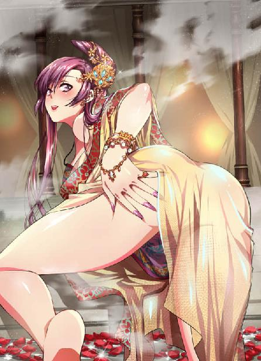
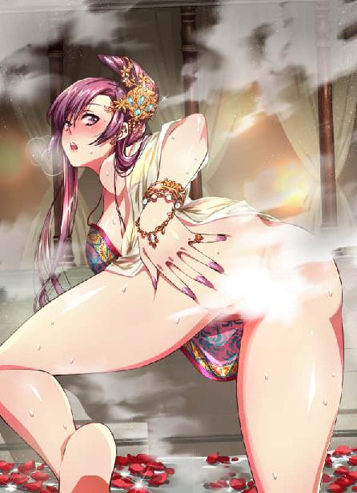

第76集·兰车以归
汉国篇（28/28）
出版日期：2019-01-02
【本集内容简介】
将错就错，飞燕归心，赵氏姐妹双娇入怀，好不惬意。
定陶王登基大典在即，程宗扬忽然丹田失控，气息断绝！
舞阳侯倒下人事不知，救人与继位仪式都耽误不得，群臣在殿，新任的摄政太后赵飞燕唯有……
危急间，一条五爪金龙降世，掀开殿顶，一飞冲天！
※ ※ ※ ※ ※

封面人物：赵飞燕

封面人物：赵飞燕（圣光版）
兰汤殿内水雾缭绕，池壁上的铜管中，热水“哗哗”地流淌，除此之外就剩下一片尴尬的静默。
程宗扬俯着身，鼻尖与那张惊惶的面孔相距只有寸许。两人四目相对，呼吸相闻，鼻端能清楚嗅到她唇瓣上如兰般香甜的气息。这张面孔自己并不陌生，问题是自己压根儿就没想到会是她。
没错，自己认错人了。
比认错人更尴尬的是，自己还搂着人家的屁股，阳具顶在她的臀缝儿里，好死不死地插进去半截。
程宗扬这会儿已经顾不得埋怨水汽太多，雾里看花，结果迷了眼睛。更顾不得去找蛇奴算账，那个该死的贱婢一通瞎指，自己本来是想偷窥赵合德的美色，她硬把自己指到赵飞燕的汤池里——这下误会可闹大了！
怎么办？
遮住脸拔腿逃跑？先不说池子里能不能跑得开，这么近的距离，她连自己胡茬都能数得清，难得还指望她认不出自己？
不言声地拔出来，装成路过一样拍屁股走人，就当事情没发生过？能没发生过吗？肉棒还在人家最私密的部位里面插着呢。
跪下来求原谅，说自己认错人了？人家能信吗？认错了还找这么准，一杆进洞？说没瞄过，全靠手感，谁信啊！再说了，这种事情说句误会就能原谅吗？诛九族都属于轻的好吧！
痛哭一场，然后自杀谢罪？自己好不容易混到如今的地步，拥立天子，裂土封侯，未来的前景一片光明，就因为进错一个洞，突然间人生就结束了？
就在程宗扬绞尽脑汁的同时，尴尬的沉默仍在继续。
最初的震惊过后，赵飞燕涌上心头的先是无比的羞怒，接着是痛苦的哀伤。她身体微微发颤，美目中忍不住涌出热泪。作为一个出身寒素的皇后，她很清楚外界关于自己的种种流言有多么不堪和恶毒，在那些谣言中，自己早已被塑造成一个声名狼藉、不知羞耻的荡妇。为了避免落人口实，她时时处处谨言慎行，如履薄冰，结果终于有了这么一天……
放任一个男子出入宫禁，自己不是没有担心过。可他不仅是唯一在危难之中向自己伸出援手的人，还是妹妹托付终身的男人——他怎么可以这样欺辱自己？他真当自己是个人尽可夫的淫妇吗？
让赵飞燕意外的是，他看上去比自己还要震惊，嘴巴张得能吞下一个鸡蛋，一脸的呆滞和茫然。忽然间，她心底生出一个念头：也许这真是一个误会？毕竟水汽这么大，相隔尺许，几乎就看不清面容……
就在赵飞燕寻找理由的时候，对面的男人终于打破沉默，他的眼神猛然间变得坚定起来，像是下定了决心一样，一把搂住自己的腰臀，接着下体一挺，阳具用力捅入。
“啊呀！不——”
赵飞燕只娇呼了半声，体内便蓦然一震，那根怒龙般的阳具贯入蜜穴，又热又硬的棒身直插体内，像是要把自己贯穿一样，一种前所未有的震颤感从身体深处迸射开来。
铜管流出的热水不知何时已经停止，池中的水声却仍在继续。光滑的汉白玉池沿沾满了水，犹如一面雪亮的镜子，映出一张妩媚而娇艳的玉靥。
一名风姿绰约的绝色丽人被人按在池沿上，她身材纤巧，虽然轻盈柔细，却依然凸凹有致，浑圆的双乳压在身下，随着身体的动作，如同一对柔软的雪球般滚来滚去。此时她正背对着汤池，白玉般优美的双腿浸在水中，一名身材精壮的年轻人从后压住她的娇躯，块垒分明的腹肌不住收缩、绷紧，顶住她的雪臀，用力挺弄。
“不要……放手……”
“放开我……”
赵飞燕蹙着眉头，带着一丝颤音哀呼道：“停……停下来……”
程宗扬倒是想开了，事情已经到了这个地步，解释是不可能解释清楚了，即使能解释清楚，也没个鸟用。下面都已经进去了，说什么都晚了，这会儿再拔出来，还不如接着做，反正罪名都一样。干脆！一不做二不休，做完拉倒。
程宗扬充满歉意地说道：“抱歉了，皇后娘娘。”
赵飞燕几乎哭出声来，“停！停下……”她声音清脆而又悦耳，犹如黄莺出谷，婉转动人，“求求你，不要再插了……”
程宗扬心下一软，停住动作，阳具仍留在她穴内。赵飞燕一手伸到臀后，掩住臀缝儿，身子因为羞痛而微微战栗。
“不要！”
身后的水声由远及近，赵合德听到姐姐的痛叫，情急之下，趟着水跌跌撞撞地闯过来。她抱住姐姐的手臂，带着哭腔道：“都是我不好——姐姐，你是怎么了？”
被妹妹撞见这一幕，赵飞燕羞窘难当，难为情地转过脸。
“都是你！”赵合德眼泪汪汪地抡起粉拳，捶在程宗扬胸前，“你那么大，姐姐怎么受得了？坏哥哥！”
程宗扬哭笑不得，“我又不是大老虎，能大到哪儿去？再说了，我有多大，你又不是不知道，你是处女都受得住，你姐姐怎么就受不住？你瞧，我还没全插进去呢。”
程宗扬说着挺了挺腰，下面的丽人又是一声痛叫。
刚才只顾着吃惊，这会儿阳具一动，程宗扬顿时觉察到一丝异样。身下的丽人肤白如雪，臀滑如脂，蜜穴更是出奇的软腻，阳具插在里面，酥爽得像要融化一样。但插到中段，蜜腔蓦然收紧，像荷包的收口一样变得又紧又窄，里面的蜜肉绵软紧凑，曲折柔滑，以自己的长度，居然一下插不到底。
赵合德双手用力推他，“坏哥哥！阿姐都被你弄疼了，别插啦。”
程宗扬无辜地说道：“我根本没插到底好不好？不信你自己看。”
赵合德低头看去，才发现那根肉棒还有一大截露在外面，不禁有些发呆。
“快拔出来……”赵飞燕颤声道：“好疼……”
“不会吧？”程宗扬不明白她一个少妇，为什么跟处女一样连连呼痛。
赵飞燕羞痛地说道：“插得太深了……”
程宗扬无辜地摊开手，表示自己真没有用全力。
“快拔出来啊。”赵合德回过神来，连忙握住坏哥哥的肉棒往外拔。
“啊！”赵飞燕痛叫着颦起眉。
肉棒又拔出少许，程宗扬道：“差不多可以了吧？”
“疼……”
赵合德绵软的小手握住肉棒，又小心拔出少许。程宗扬只觉龟头一松，从那处狭紧的荷包口中脱出。身下的丽人如释重负地轻叫一声，痛楚稍解。
那根肉棒已经拔出大半，留在穴内的顶多有三分之一。
“快拔出来！”赵飞燕痛声斥道：“程侯，你怎能如此？哀家原以为，你是正人君子……”
程宗扬讪讪地有些不好意思，想说这本是误会，可是绝色当前，自己就这么缩了，绝对会后悔一辈子。
赵合德暗暗咬了咬玉齿，然后小手一动，非但没有拔出，反而将肉棒往姐姐体内送去。
正在交合的两人都是大出意料，龟头重入蚌口，程宗扬一阵舒爽，赵飞燕却是痛叫出声。
“姐姐，你忍一忍啊。”赵合德柔声道：“刚开始有一点点疼，后来就不会疼了。”
“你——啊！”赵飞燕扭动雪臀，试图躲避肉棒的插入，一边娇呼道：“不要再插了，真的好疼……”
“哥哥真的没有用力啊，外面还有好长呢。”赵合德拉起姐姐的手，放在那根怒胀的肉棒上。
赵飞燕手指一触，顿时打了个寒噤。那根阳具半数插在自己体内，露出的部分仍如同巨蟒一般，无论长度、硬度、粗细，还是触摸时的温度，都远远超乎自己的想象。
“姐姐别害怕，”赵合德认真道：“哥哥给我开苞的时候，这么长一整根都插到我的小肉洞里面。还有他跟别人做的时候，也是全插进去的。姐姐，你也可以的。”
“不！不要！”
身后传来一声轻笑，蛇夫人摇摇摆摆地走过来，笑道：“娘娘里面是不是没有被插过？还是头一回被插得这么深呢。”
赵飞燕羞痛难言，勉强点了点头。
程宗扬恍然道：“难怪里面就跟没开苞过一样。尤其是这里……”他挺了挺腰，身下白玉般的胴体顿时一阵轻颤，与此同时，穴内传来一声细微的轻响。
蛇夫人眼睛一亮，“主子再试几下。”
程宗扬又挺动几下，阳具被湿腻的蜜肉紧紧包裹着，宛如深入泥淖，抽动时带出几声“叽咛叽咛”的轻响。伴随着阳具的抽动，丹田忽然微微一震，膨胀的气轮仿佛被吸引一般，微微偏转少许。
“主子，”蛇夫人的声音从耳边传来，“娘娘内里是不是像荷包口一样？里面别有幽径？”
“没错。”
“是不是里面越来越窄，像是插不到底呢？”
程宗扬试了试，以后入的姿势，居然还探不到花心，反而让身下的玉人又发出几声痛呼。
蛇夫人把脸贴在皇后娘娘臀上，一边听着，一边催促道：“主子再来。”
程宗扬又动了几下，穴内又发出几声腻响。
“恭喜主子，”蛇夫人展颜笑道：“皇后娘娘这只妙穴，可是难得一见的鸣鸾仙体。”
“什么鸣鸾？”
蛇夫人笑道：“鸣鸾之穴初时易入，蜜腔内犹如荷包，浅暖可喜，已经是上等名器，但再往里入，方知其中曲径通幽之处，别有洞天。只是其间有一鸾关，寻常阳根稍有不济，便无法入内，只当已然插到底，其实是被鸾关所阻。主子方才这几下，便是破了娘娘的鸾关，探入曲径。”
听到两人议论自己的私密之处，赵飞燕面红耳赤，只是被人紧紧压着，无力挣脱。
程宗扬道：“为什么叫鸣鸾？”
“鸣鸾仙体，阳具稍逊便不堪用。一旦遇上修短合度的阳根，鸾穴内春水滋生，抽送时穴中淫声连绵不绝，犹如鸾凤清鸣。”蛇夫人夸张地叹了口气，“好生可怜，皇后娘娘虽然备受荣宠，偏遇上个不济事的。徒具仙体，却全未品尝过其中的妙处。所幸遇到主子，替娘娘开了鸾穴……”
“不要！”赵飞燕狼狈道：“你们不能这样……”
“事已至此，哪里还能洗得清白？”蛇夫人笑道：“娘娘不若抛开顾虑，尽欢而罢。”
说着她双手扒开赵飞燕的臀肉，只见雪玉般的臀沟间赫然印着一只蝴蝶状的胎记。那蝴蝶只有指尖大小，色泽粉腻，形状惟妙惟肖，宛如在臀间翩翩飞舞一般。
“娘娘这印记，天生的招蜂引蝶，命中注定便有今日……”
赵飞燕羞忿交加，呵斥道：“你——”
“娘娘莫非忘了？”蛇夫人贴在她耳边柔声道：“且不说娘娘如今的荣华富贵，我家主子出了多少力气，单是当日娘娘中毒，还都是我家主子割了自己的手腕，取血相救，才好不容易保住娘娘的性命。说起来，娘娘这身子里面，可还流着我家主子的血呢。眼下我家主子无非用用你的身子，左右也掉不了一块肉。娘娘还这么推三阻四，未免让人寒心。”
一番话说得赵飞燕面红耳赤，哑口无言。
蛇夫人得意地一笑，扬声道：“合德妹妹，你也来！咱们一起动手，免得娘娘吃痛。”
两女一起伸手，将玉人臀肉扒得敞开，露出蝴蝶下方一只形如莲瓣的美穴。程宗扬阅美无数，亲眼目睹之下也不禁惊叹，赵飞燕私密部位的形状堪称完美，色泽红艳欲滴，没有半点杂色，娇娜柔美，隐约还散发着一股异香。
“好美的浪穴，外面又白又嫩，里面红鲜鲜的，柔润得像要滴水一样呢。”蛇夫人回头笑道：“主子，莫让皇后娘娘等急了。”
程宗扬二话不说，阳具沿着滑腻如脂的蜜腔长驱直入，龟头一震，便即破开鸾关，捅入皇后娘娘从未被人进入过的秘境深处。紧狭的蜜腔内，柔嫩而又多汁的蜜肉层层叠叠卷住阳具，犹如重门叠户，幽深无比。龟头穿行其中，仿佛被一张柔腻的小嘴含住，还不时伸出香舌来回卷动舔舐。
身下的玉人虽然已非完璧，此时却像刚开苞的处子，被人深深楔入自己未经人事的处女地，禁不住发出丝丝痛叫。
看到姐姐在那根大肉棒侵犯下，难以承受的婉转之态，赵合德感同身受，她半是安慰半是鼓励地劝说道：“姐姐莫怕，疼一会儿就好了。我被哥哥开苞的时候，一开始也很疼，我就乖乖忍着，让哥哥干我的小肉洞。虽然流了好多血，但后来没那么疼了。”
“姐姐，我悄悄告诉你啊，上次哥哥就是在这里用我的。那次我一点都没有疼，还很开心。只不过哥哥太厉害了，我自己承受不住，最后蛇姐姐和江女傅也来帮我。”
“你们……你们都……”赵飞燕娇喘着颤声道：“连江女傅也……”
蛇夫人笑道：“江女傅年纪也不大，而且保养得好，身子白白嫩嫩的，不光是主子收用过，连我们姐妹也沾了光。”
赵飞燕闭着眼睛，玉齿紧紧咬住红唇，喉咙深处却不时发出压抑的低叫，从鼻腔发出时，已经变成低低的呻吟。她鸾穴深处的秘径依然曲折狭紧，蜜汁却越涌越多，抽送时愈发顺畅，随着肉棒的进出，渐渐传出水声。
程宗扬终于知道什么叫鸣鸾。赵飞燕的蜜穴内狭外紧，被他粗大的肉棒杵在穴口，淫液都被锁在穴内，里面水汪汪一片，尤其是龟头挤入鸾关，宛如榨汁一样，将满溢的淫液从重门叠户的秘径中挤出，发出一连串“叽叽咛咛”的声响，犹如鸾凤清鸣，连绵不绝。
这一次意料之外的交合虽然出于一个误会，最后却是难得的淋漓尽致。第一次享受到鸣鸾仙体的程宗扬固然极尽欢畅，身下的玉人同样初次体会到真正的鱼水之欢，最初的痛楚过后，蜜穴淫水四溢，阴精尽出。意乱情迷之下，甚至主动扭动雪臀，让他在自己的九曲秘径中进得更深。
伴随着欢畅的快感，丹田的异状也越发明显。那只气轮原本黑白掺杂，生死根吸收的杂气与真元混成一团，使得气轮膨胀臃肿，每次转动都像是随时会崩溃一样。若是以采补之术，用废几只鼎炉，也许能除尽杂气，但程宗扬狠不下这份心肠，只能用水磨工夫，慢慢消磨了。
好在自己身边颇有几个资质上等的鼎炉，能消去不少杂气。此时进入赵飞燕体内，才发现她这个不谙修为的女子，鼎炉之佳丝毫不逊于合德的极品玉涡。阳具深入穴内，旋转的气轮随之偏转，混淆其间的杂气像是被吸引一样往气轮外围渗透，比起平常运功炼化的效率高出数倍。
一口气干了小半个时辰，程宗扬终于挺身直入，阳精破关而出，在玉人体内剧烈地喷射起来。随着肉棒的喷射，那只蜜穴的穴口、鸾关、花心所在的宫口同时收紧，将精液尽数纳入穴内，涓滴不剩。
※ ※ ※ ※ ※
赵合德扯过一条红绫，掩住姐姐的身子，将姐姐扶到榻上安歇。从眩晕中清醒过来的赵飞燕玉容惨淡，一手掩着面孔，珠泪连串滚落。
“姐姐……”
赵飞燕闭着眼睛哽咽道：“你可知道错了吗？”
赵合德慌忙道：“不是的，阿姐。”
“今日之事，是你设计的是不是？”赵飞燕凄然道：“难怪要扯我来洗浴，还偏要分开——你何苦要害我？”
“不是我。”赵合德吞吞吐吐地说道：“我……我不能说……”
“傻丫头，你为何要听旁人的话，污了姐姐的清白？你是要我死吗？”
“不是的，姐姐。”赵合德连忙分辩道：“蛇姐姐说，这都是为你好。”
“你在胡说什么？”
“她说，姐姐身居深宫，没有家世依仗，更没有可靠的臣僚下属，天下这么大，想害姐姐的，成千上万，真心帮姐姐的，却只有程郎一个人。”
“所以你就把姐姐出卖给了他？”赵飞燕痛惜地说道：“傻妹妹，程侯已然帮了姐姐许多，如今我身为皇后，待欣儿登基，便是太后。若要回报程侯，又有何难？可我以皇后之尊，行此苟且之事，只会让程侯看不起我……你！”
“不会的！”赵合德连忙道：“哥哥不会那样的。蛇姐姐说，哥哥对自己的女人从来都极好的，何况姐姐那么漂亮……”
“你那哥哥身边的漂亮女人还少吗？”赵飞燕打断她，“无论那些侍奴，还是卓教御、丹琉姑娘，都是难得一见的绝色。何况还有那位紫姑娘——姐姐身居后位，何苦再自充下陈，以色事人？”
话音未落，外面忽然传来一阵笑声，却是蛇夫人正用唇舌替主人清理下身，谁知刚舔舐几下，那根肉棒就又硬了起来。
赵飞燕心头愈发堵得难受，低声道：“原本我与程侯分属君臣，如今上下易位，他该如何看我？你以为我会享尽宠爱，焉知姐姐不会沦为旁人的玩物？”
“不是的，不是的！是我没有说清楚。”赵合德急忙解释道：“是这样的，蛇姐姐说，程郎身边有一个很坏很坏的人，姐姐也认识的，就是那个中行说。蛇姐姐说，他知道那个冒充我的昭仪怀了天子的孩儿，就起了坏心思，想害死姐姐和小天子，再害死哥哥，让那个昭仪肚子里的孩儿当天子。”
“什么！”听到刘骜居然留下骨血，赵飞燕吃惊地张大眼睛。
“还有，蛇姐姐悄悄告诉我，哥哥其实是阳武侯之子，只是阳武侯失去帝位，怕程郎被人暗害，才改名换姓。哥哥虽然未曾改回原姓，却是帝室嫡脉。而且，我在武皇帝陵亲眼看到……”
赵合德在姐姐耳边小声说了几句，赵飞燕愈发惊骇，“真龙降世？程侯通过了帝陵的血脉验证？那先帝……”
赵合德一脸认真地说道：“是假的。”
“天啊……”赵飞燕简直不敢相信。
“那个冒充我的期姑娘现在好可怜，不会说话，也不会动。蛇姐姐说，那个中行说狡猾得很，万一被人知道她怀着假天子的孩子，会害了我们大家。可程郎又是个心肠好的，不想伤害她。蛇姐姐还说，与其让那个中行说阴谋得逞，不如让姐姐怀上程郎的孩子……”
“你在胡说什么啊！”赵飞燕又羞又恼。
“蛇姐姐说，等姐姐有了身子，可以对外宣称是那个假天子的遗腹子。既然程郎是帝室嫡脉，姐姐怀的孩子自然也是嫡脉，到时候就可以名正言顺地继承帝位。蛇姐姐还说——”
“别再说了……”
赵合德坚持说道：“蛇姐姐说，定陶王再好，总不如姐姐亲生的——看看天子和吕太后就知道了。”
“你……”赵飞燕心里乱纷纷的，看着一脸天真的妹妹，却无力再说什么。
蛇夫人掀开帷帐，笑吟吟走了进来，“娘娘可好些了？”
赵飞燕抿紧红唇，过了一会儿才道：“今日之事，我不会往外说，也请程侯就此忘却，只当未发生过——可好？”
“不好。”蛇夫人道：“刘吕作乱，宫中危急，我家主子可是拼上性命来帮娘娘，娘娘一句话便就此了账？那怎么成呢？”
“你——”赵飞燕道：“你想怎么样？”
“娘娘有情，我家主子有意，”蛇夫人用诱惑的口吻道：“既然今日天公作美，赐下一段良缘，何不长长久久呢？”
“程侯身边佳丽如云，难道还贪图我的姿色吗？”
“娘娘太过谦了。娘娘的姿色绝世，任谁能不心动？要不然我家主子何必连命都不要，也要维护娘娘周全？”
“程侯帮我，就是为此吗？”
“娘娘这么说就没意思了。”蛇夫人道：“娘娘总该知道，那位吕大司马早已放出话来，就等娘娘迁居北宫，便将娘娘送入永巷——娘娘不妨想想，若非我家主子舍命相护，娘娘当如何？说不定娘娘这时候正被那些阉奴按住手脚，让吕大司马享用呢。娘娘别以为这是危言耸听，他们连天子都敢杀，何况娘娘？”
“程侯这么做，与吕氏又有何分别？”
“吕家对娘娘恨之入骨，”蛇夫人毫不客气地说道：“若是娘娘落到他们手中，只怕被诸吕遍淫，尚不解其恨。至于我家主子，对娘娘可是一片真心。娘娘不妨想想，当日娘娘中毒，举世之间，能像我家主子一样为娘娘割腕的，能有几人？”
赵飞燕目光变换。这世间男子，不知有多少人觊觎自己的美色，可是肯为自己割腕的，普天之下，又有几人？
唯有他一人而已。
蛇夫人伏在榻侧，在赵飞燕耳边柔声道：“我家主子对娘娘爱慕已久，只是我家主子是个好人，平日觐见，总以礼相待。娘娘只怕还不知道，我家主子每次见过娘娘，回来干起奴婢都多出好几分力气呢。”
赵飞燕满面飞红，禁不住用红纱遮住面孔，“夫君新丧，不祥之身……恕难从命。”
“哎呦，娘娘真以为天子对娘娘有多少真心，还要为他守节？他不过是拿娘娘当幌子，好与太后争权夺利罢了。再说了，娘娘是正宫皇后，那刘骜只是个篡居帝位的假天子，我家主子可是真龙降世的武皇嫡脉。不信，娘娘可以问太后，她当时在场，可是亲眼目睹的。”
又一次听到真龙降世，赵飞燕心思更乱了。
蛇夫人掩口笑道：“险些忘了，娘娘身子里还有我家主子的鲜血呢。娘娘不妨想想，接纳过主子的真龙血脉，娘娘的身子是不是好了许多？”
赵飞燕垂下目光，长长的睫毛微微颤动着。自从接纳过他的鲜血之后，自己身体确实好了许多，即便寒冬时节，手脚也热热的。原本未曾留意的细节，此时一点一滴浮上心头，她心下已经信了七分。
“我家主子怕汉国震荡，宁愿舍弃帝位。以天下苍生为念，这才是真正的帝王胸怀。娘娘身为正宫皇后，不去服侍真龙，难道要给那个假天子守节吗？”
赵飞燕心乱如麻，这边赵合德也拉住她的手，“姐姐，你一个人在宫里，我好害怕。让程郎来保护你好不好？”
见赵飞燕不再作声，蛇夫人抿嘴一笑，起身道：“主子快来，娘娘已经应允了呢。”
帷帐掀开，那个年轻而健壮的男子迈步进来。他连衣服都没有穿，就那么赤裸着，显露出宽阔的胸膛，浑身肌肉分明，散发着逼人的雄性气息。
赵飞燕像被烫到一样避开视线，用红绫遮住玉颊。她入宫之后，平日接触到的除了宫女，便是一帮满身阴气的阉奴，身边的正常男子只有一个刘骜，何曾见过如此充满阳刚之气的男性？她掩住面孔，心里慌成一团，不知道该怎么面对这个刚刚侵犯过自己的男子。
※ ※ ※ ※ ※
一只温热的手掌握住红绫，缓慢却不容执拗地从她身上扯下。赵飞燕心乱如麻，手指一点一点松开。
两具身体终于第一次面对面地裸裎相对，彼此间再没有半点遮掩。
看到那根刚喷射过的阳具，转瞬间又一次硬梆梆地怒勃而起，赵飞燕羞窘之余不免还有些惊讶。
那个传说真龙降世的男子俯下身，双手撑在自己颈侧，含笑望着她的眼睛。赵飞燕玉颊越来越红，犹豫片刻，终于慢慢张开双腿，带着一丝羞涩的顺从，绽露出自己的秘处。
“啊……”
粗硬而火热的阳具纳入蜜穴，身下的玉人低低叫了一声。
程宗扬笑道：“我和那个假天子，谁厉害？”
赵飞燕羞声道：“……是你。”
蛇夫人逗弄道：“他以前能插到哪里？这里吗？”她扶着阳具往里一送，龟头挤入蜜腔，顶住鸾关。
“啊……再浅一些……”
蛇夫人比量了一下，笑道：“还没有主子一半长呢。恭喜主子，娘娘里边都还是没人用过的新鲜货呢。娘娘不光被主子破了鸾关，里面的第一次也是给主子用了。”
看着身下娇羞温婉的玉人，程宗扬心头一阵荡漾。虽然觐见过皇后多次，甚至方才还有了肌肤之亲，但此时他还是第一次在这么近的距离，尽情观赏她的美色。赵飞燕名不虚传，果然是绝色。她身姿纤柔，此时刚洗浴过，不染脂粉，肌肤如冰似玉，晶莹而又柔润。小巧的唇瓣红嫩艳丽，宛若花瓣，随着她娇弱的低呻，更是呵气如兰，口齿生香。
“啊……”
赵飞燕一声低叫，眼角沁出泪花。
程宗扬压下心底的怜惜，在她狭紧的秘径内越进越深，直到整根阳具尽根而入，才停下来。然后把阳具留在她体内，低头吻住她的红唇，用舌尖挑开她的玉齿，吮吸着卷住她的香舌。
第一次被他以强硬的姿态从正面占有，与方才的感受完全不同。如果说方才被他从后面进入时，赵飞燕更多的是惊慌和被人强迫的屈辱，此时就只剩下满满的羞意和柔婉的顺从。
接下来的两刻钟，赵飞燕真真切切感受到什么叫狂风骤雨，自己宛如巨浪中的一叶小舟，被他带着身不由己地随波逐流，时而飞上九霄，时而坠入深渊。接踵而至的巨浪使她无法呼吸，脑中阵阵眩晕，几乎分不清这一切到底是真实还是梦幻。
鸾关新破，蜜穴宛若处子，交合之际，春潮四溢。恍惚间，赵飞燕忽然有种感觉，自己嫁的本就应该是他，而不是那个暴毙而亡的假天子。
曾经的一切恍如前世，如今的一切都是命中注定。
※ ※ ※ ※ ※
程宗扬躺在皇后的凤榻上，手臂张开，一左一右将两个容颜倾城的姐妹花拥在臂间。两女侧身枕在他的肩膀上，与他头颈相偎，两张美艳无俦的娇靥有如明玉，姿容绝世，令人流连忘返。她们俩与郎君裸身相依，胸乳贴在郎君身上，随着呼吸柔柔起伏。还在郎君要求下，各自张开玉腿，夹住郎君的大腿。
柔嫩而温润的蜜穴紧贴着郎君的身体，能感受到他腿上的热量透过玉户，一丝丝透入余痛未消的蜜腔深处，温暖着受创的嫩穴。
赵飞燕此时还有些不敢相信，他不仅在破了自己鸾关、大肆喷射之后，紧接着又从正面干到自己阴精尽泄，来了第二发。随后还拉来自己妹妹，又在合德的体内来了第三发，竟然还不显疲态，仍然一副龙精虎猛、意犹未尽的模样。
她原本以为世间男子都和那位假天子一般，可与程郎一比，相去不啻云泥。今日方知天下之大，何谓世间的大好男儿，更是第一次真切体会到云雨交欢的乐趣。此间之乐，足令人魂销，只是妙处难与君说，如鱼饮水，冷暖自知罢了。
合德在程宗扬耳边道：“卓教御什么时候入宫？我有些想她了。”
“想她什么了？”
“她上次教我的道法，我有的地方不大明白。”
程宗扬敲了敲脑袋，转头对蛇夫人道：“卓美人儿不是在宫里吗？我都好几天没见着她了。”
“卓奴被紫妈妈派去办事了。”
“去哪儿办事？”
“好像是去了秘境。”
“去那儿干嘛？”程宗扬道：“太危险了。”
“是。奴婢回头问过妈妈，叫她回来。”
蛇夫人说着话，一边给主人抹拭身体。
赵飞燕惊讶地看到，被侍奴揩抹过后，他下身竟然又硬了起来，一副斗志昂扬、不可一世的样子。
自从赵飞燕入宫服侍君王，在她记忆中，天子即使服过药，一夜两度春风的次数也屈指可数。可他就像没有疲倦的时候一样。再看周围，除了自己，合德、蛇夫人、江女傅对这一幕都见怪不怪。赵飞燕不由地再次想起那个“真龙降世”的传言。
忽然她耳朵一动，听见妹妹说道：“哥哥，你何时采我和姐姐的后庭？”
赵飞燕一阵心惊肉跳，“合德，你在说什么？”
“用后庭啊。”赵合德道：“我的后庭还没有被哥哥用过呢。”
“这么腌臜的事，你……”
“这么做不对吗？”赵合德天真中带着几分懵懂，“可蛇姐姐和江女傅的后庭，都被哥哥用过啊。不光她们，哥哥内宅的女人，也都让哥哥用过后庭啊。”
赵飞燕很想告诉妹妹这么做不合礼法，即使天子，也是非礼勿行，行不得快意之事。这等羞耻背德的勾当，怎能……忽然臀后一紧，却是郎君张手握住她的臀肉，揽紧她的身体。
赵飞燕低呼一声，那条肌肉分明的大腿贴在她股间，玉户被挤压着，传来令人震颤的触感。当一根手指没入滑腻的臀沟，按住那处从未有人碰触过的肛蕾，她再生不出一丝违抗的念头，只乖乖低下了头。
程宗扬终于没有采摘姐妹俩的后庭娇花，倒不是无力再战，而是心有不忍。合德固然破体未久，飞燕同样是鸾关新破，梅开二度已是极限。鲜花虽美，终不能竭泽而渔，还是要好生滋养的。
“这就要走吗？”见程宗扬坐起身，合德恋恋不舍地说道。
“进宫这么久，再待下去该有人起疑了。”程宗扬说着，揽住她的腰，在她唇角吻了一口，“晚些我再来看你。”接着又揽过旁边的玉人，同样吻了一口，“还有你。”
合德笑道：“下回可别认错了。”
※ ※ ※ ※ ※
披香殿内，小天子坐在阮香凝怀里，一手还拉着她的衣角。在他面前，毛延寿正伏案挥毫，寥寥几笔，一个身材短小的侏儒便活灵活现地跃然纸上。小天子乌亮的眼珠盯着他的笔尖，看得聚精会神。孟舍人靠在柱子后面的熏炉旁，仰着头睡得正熟。他两腿箕张坐在地上，嘴巴大张着，一边打鼾，一边淌着口水，浑然不知自己被当作模特。
在程宗扬看来，毛延寿虽然贪财了些，别的也无甚劣迹，一手丹青更是技艺超群，教导小天子绰绰有余，于是顺水推舟，把毛延寿送进帝师名单。
此事对程宗扬而言只是举手之劳，对毛延寿来说，则不啻于天降洪福。他原本的志向只是入宫当个画师，结果不经意间攀附上程侯，一跃成为执笔丹青的帝王之师。毛延寿喜不自胜，对这位洪恩浩荡的主公更是感激得无以复加。
见程宗扬过来，毛延寿连忙放下画笔，恭恭敬敬地大礼参拜，“末学见过君侯。”
“不必多礼。”程宗扬摆了摆手，然后半蹲下身，对小天子温言询问几句。
定陶王眼下尚未登基，但举止颇有帝王风范。程宗扬虽然忌惮他的黑魔海背景，但对这个小娃娃着实有几分喜欢。至于赵合德那番话，他压根儿没当真。自己一堆奴婢都没怀上，何况赵氏姐妹这对出了名不能生的？朱老头满心让帝位回归正统，有定陶王继位，也该满意了。
离开寝宫，郑宾已经在外面等候多时。这边程宗扬踏上车，他便抖起缰绳，驾车驶出宫门。敖润紧跑两步，飞身跃上车尾，一边将背后的铁弓擎在手中，丝毫不敢放松警惕。
“用不着这么紧张吧？”
“小心无大过。”敖润道：“尸山血海都过来了，总不能阴沟里翻船。”
“紫姑娘呢？”
“刚还在昭阳宫，还有曹太监。”
“过去看看。”
郑宾在前面应了一声，车马一路穿过阿阁、兰台，驶入昭阳宫内。昭阳殿前为天子招魂的灵幡尚在，宫室楼阁已然面目全非。昔日漫地铺设的红毯历经火焚刀砍、铁蹄践踏，破损得不成样子。被冲车撞塌的宫墙也没有来得及修补，只用锦障遮掩，外面看起来倒还光鲜，里面却是一片残垣断壁，满目疮痍。
程宗扬刚下车站定，便听到“轰隆”一声巨响，殿中残存的一根巨柱倾颓过来，一角的飞檐连同斗拱随之坍塌，溅起漫天尘土。
紧接着废墟里传来一声尖亢的叫声：“找到了！找到了！”
老太监灰头土脸地从满地碎瓦中爬起来，一手举着一只锦盒，叫道：“找到了！娘哎，累死老奴了。”
中行说不阴不阳地说道：“行啊曹爷，还真下力气，连房子都扒了。”
曹季兴没搭理他，乐颠颠过来报喜，结果扭头看了一圈也没找到人影，“紫姑娘呢？”
“被你埋了。”
“哎呦！”曹季兴赶紧往废墟里冲。
程宗扬忍不住道：“骗你呢。往上瞧。”
曹季兴抬起头，只见小紫坐在摇摇欲坠的大殿顶上，一手托着下巴，正笑吟吟看着下面。
“亲娘咧，那地方坐着多悬啊！”曹季兴道：“快下来！东西找着了！”
曹季兴托起锦盒献宝，结果手上一轻，被程宗扬路过时顺手夺走。
曹太监气得直拍大腿，程宗扬理都不理，径直跃上檐角，说道：“什么宝贝这是？”
“龙槎星辰啊。”
“你一直在找这个？这盒子……看起来有点眼熟。”程宗扬嘀咕一句，随手打开盒盖，结果里面空荡荡的，别说宝石，连根毛都没有。
“老曹，是不是你把东西掏走了？”
“天地良心啊！”曹季兴拍着大腿直叫屈，“东西你抢了也就算了，咋还端着屎盆子往奴才头上扣呢？”
程宗扬把盒子倒过晃了半天，无奈道：“空的。”
“糟糕，又没有找到。”小紫挑起唇角，笑吟吟道：“大笨瓜，你运气真不好。”
“是你运气不好吧。”程宗扬拿着空盒准备一扔了之，想了想又收进怀里，“找不到就算了。过来抱抱。”
小紫环住他的腰，把脸贴在他胸口，然后皱了皱鼻子，“好啊，你又上了别的女人了。”
“不会吧，这你都能闻出来？”
“这个香味很特别……”小紫略一思忖，然后抬起眼睛，似笑非笑地说道：“程头儿，你好厉害呢，连皇后娘娘都不放过。”
“还敢说我？”程宗扬虎着脸道：“老实说，今天这事是不是你干的吧？”
“你猜。”
“我一猜就是你！”程宗扬没好气地说道：“要不怎么会这么巧，正赶着我入宫的时候洗浴？没你的吩咐，那些奴婢敢这么乱来？死丫头，你太坏了吧！”
小紫笑道：“人家就喜欢程头儿四处拈花惹草啊。这么好的鲜花，错过了好可惜呢。”
“真的假的？”
“你猜啰。”
“我猜是假的。”
“猜错啦。程头儿的女人越多，人家越开心。”小紫笑道：“这下连皇后娘娘也要叫人家妈妈了。还能给人家暖床。”
“死丫头，合着我的后宫是给你开的？”
小紫眨了眨眼睛，“不然呢？”
“不然个鬼啊。”程宗扬道：“今晚我就让你侍寝！”
“好啊。今晚人家就陪程头儿好了。”
※ ※ ※ ※ ※
“侯爷回来了。”
侍奴打开门帘，一阵香馥的暖风扑面而来，驱走寒意。程宗扬张开双臂，奴婢过来替主人解下大氅，又取了热水盥洗。
隔着纱帘望去，只见云如瑶一手执笔，一手拨打着算盘，她指尖抹过，象牙制成的珠子发出流水般悦耳的声响，数以百万计的数字在她指下跳动着，一笔一笔梳理得清清楚楚。雁儿、红玉等人在旁或是翻检簿册，或是誊抄账目，忙得不可开交。
云如瑶清点完，雁儿也誊抄完毕。云如瑶看了一眼，点了点头。雁儿取过印章，蘸满朱砂，印在册上。
云如瑶吩咐道：“这些给秦先生送去。”
“是。”惊理捧起账册，从帐内出来。
红玉斟了杯热茶，奉给女主人。云如瑶放下朱笔，揉了揉手腕，然后接过茶盏，浅浅饮了一口。
“轮到奴婢了。”何漪莲笑道：“年关将近，奴婢那边人丁不少，眼下口粮都有些吃紧了。”
云如瑶唤道：“雁儿，把东边第十七卷洛帮的账册取来。”
雁儿起身取来账簿，翻开来，里面有一张用过印的册页。
云如瑶道：“此事我已经知道了。这回洛帮上下出了不少力气，除了许诺过的钱粮，另外多加了两成。你来掌总，该赏的赏。”
何漪莲喜出望外，“这下可好了。如今城里粮价已经涨了三四倍，奴婢正发愁怎么打这个饥荒，没想到夫人不但已经备好了，还多了两成。奴婢可要给夫人磕个头，多谢夫人恩典。”
“这是洛帮该得的，用不着谢我。”云如瑶道：“你也知道的，夫君虽然封侯，到底根基太浅。洛都一半的货物都要靠洛水运输，是个要紧的关节，眼下你管着洛帮，洛帮稳住了，夫君才好放心。”
“是。奴婢明白。”
“去找程府丞吧。”罂粟女把册页递给她，笑道：“晚上记得过来，让侯爷再赏你一回。”
何漪莲接过册页，笑着啐了她一口。出来时正撞见程宗扬，被他抱着摸了几把才放手。
云丹琉白了他一眼，“大伙儿忙得要死要活，侯爷倒是轻闲，一大早就不见人了。”
程宗扬笑道：“你姑姑执掌内书房，比我强一百倍，我有什么不放心的？”
云如瑶埋怨道：“夫君大人万事丢开不管，还来取笑我们。”
程宗扬理直气壮地说道：“我这是有自知之明。你看啊，论起做事的勤勉精细，我不及程大哥，对吧？抽丝剥茧，化难为易，我不及会之；行事果决，处置分明，我不及班超；洞察人心，智计百出，我不及贾文和——蔡爷那种妖物咱们就不提了，论计数算账我也不比上瑶儿你。我唯一能做的，就是放手让你们做事，别干出让程大哥这种实干派算计人心，贾文和这种阴谋家主管细务的荒唐事就行了。”
云丹琉哼了一声，“说来说去，还不是我们当马拉车，你来坐车？”
“来啊！把大小姐这匹大白马牵过来，让本侯骑一回。”
几人笑闹片刻，惊理抱着一堆书契进来，却是舞都周边，当初划定的一系列沿河土地，此时已经初步清点过田亩，与官府立好文契。
云丹琉有些惊讶，“舞都的差事办这么快？别的地方，有些连案牍都还没接到呢，他们就办完了？”
云如瑶道：“舞都是夫君大人的封地，那些官吏自然要卖力些了。”
“这个我知道。”程宗扬道：“封侯的诏命之前，朝廷已经下诏征辟眭弘为舞都太守——说是给朱老头的，他能不卖力吗？”
云如瑶笑道：“既然如此，这些就由商会的人打理吧。”
惊理道：“不知该如何处置？”
“先支一批款项，招募人手勘察一遍。一是河道水文，二是地理道路，三是人口出产。”
“舞阳河下游这一处最要紧。”云丹琉挑出一份书契，“我在晴州听水手说起过，以前海船能直接驶到此处。后来舞都易手，生意凋敝，再加上泥沙淤积，才断了航路。若能通航，船只可由此直接出海。”
几人开始商量如何招募民夫，疏浚河道，修建码头，恢复通航。程宗扬在旁听了片刻，悄悄从书房出来，吩咐红玉去送些点心、茶水，然后叫上阮香琳，穿过廊桥，前往湖心岛。
阮香凝入宫陪伴天子，义姁被小紫叫走，小楼里只剩下一个不言不笑，也不能动的友通期。程宗扬过来探视一眼，说了几句宽慰的话，然后来到楼上静室，嘱咐阮香琳在外面守着，不许任何人打扰——除了死丫头。
卓美人儿不在，只好暂时让阮香琳护法。大家都有事在忙，自己也不能整日闲着了。程宗扬关上静室房门，然后盘膝坐下，气沉丹田，缓缓展开内视。
丹田内的空间几乎被膨胀的气轮充满。此时的气轮不再是浑然一体，而是隐约显露出分层轮廓，仿佛伸出几条旋臂，已经可称之气旋。灰黑色的杂气与莹白色的光点掺杂交错，绕着气旋的核心缓慢旋转。程宗扬敛息凝神，按照九阳神功的功法，缓缓催动气轮，开始炼化杂气。
真气接连运行两个周天，等程宗扬睁开眼睛，已经是一个时辰之后。他张口呼出一口灰蒙蒙的寒气，收功止息，眉头不由皱紧。
丹田的情况很不乐观。洛都之乱，两宫死者逾万，自己所在的长秋宫又是各方角逐的主战场，吸纳的死气难以数计，而且里面鱼龙混杂，数以千计的军卒、武者、死士、门客、雇佣的杀手，还有身怀异术的方士、兽蛮武者，甚至还有几个修为诡秘的大和尚，使得丹田内的气息杂乱不堪。
他试着用太一经引导那些杂气，结果不到半炷香时间，无数负面情绪便如潮水般涌入脑海，恐惧、仇恨、愤怒、内疚、悲伤、饥饿、杀戮……汇聚成毁灭一切的疯狂冲动，险些让他迷失其中。
无奈之下，程宗扬只能重新运转九阳神功，将杂气逐一炼化。炼化过的杂气融入气海，修为又略深少许，可距离六级通幽境的关隘也更近了一分。
他估算了一下，如果要把这些杂气全部炼化，别说突破六级通幽境的关隘，就是达到六级中阶都轻而易举。问题是炼化的速度实在太慢。自己全力运功，想把这些杂气炼化完，恐怕一万个时辰都打不住。自己每天拿出五个时辰修炼，也得六年。即使用房中术，阴阳相济，效率提升一倍，起码也得交合五千次。也就是说，就算自己像种马一样一天五次，也得日御五女，持续三年。
如果都换成飞燕、合德、如瑶、丹琉那样的上品鼎炉，至少也得一千五百次以上。在不伤身体的情形下，每天让她们泄身一次，采其阴精，一个月二十次，一年下来，一个人最多也不到三百次。也就是说，自己想在一年内炼化完所有杂气，起码得六个上品鼎炉日夜服侍。少一个上品的，就得两个中品的来凑，折算下来数字更恐怖。真要这么玩，自己一天到晚不用干别的了，除了吃饭睡觉，其他时间全用上也不一定够。
若是放缓速度，一天一两个也未尝不可，问题是自己丹田的气旋未必能等那么久。如今自己真元满溢，已经到了突破的边缘，气海不堪重负，随时都可能失控崩溃。一旦失控，轻则修为尽废，重则道消身死。与其如此，还不如牡丹花下死，做个风流鬼。
这会儿程宗扬倒是理解死丫头为什么要把赵飞燕推给自己。鼎炉易得，上品难寻，多一只上品鼎炉，自己就多了一分保命的可能。
一丝清香飘入鼻中，接着一双温凉的小手按在额角。小紫一边揉着他的太阳穴，一边道：“大笨瓜，在想什么？”
“我在想什么时候走。”
“去舞都吗？”
“没错。贾文和说我现在应该以退为进，暂时避避风头，专心把舞都经营起来。我觉得他说的很有道理。不过……”
“不过程头儿若是这么走了，亲亲的皇后娘娘怎么办呢？”小紫道：“总不好把皇后娘娘打包带走，没事就干干她的小穴，听她的鸣鸾给你唱歌。”
“你个死丫头……”程宗扬无奈地说道。
“其实也好办——你让情奴扮成皇后娘娘好了。”
“那太后呢？”
“杀了吧。”小紫道：“反正程头儿是正人君子，不想干她。对外就说太后驾崩了。”
“咳咳咳！”
“大笨瓜。”小紫笑道：“你不想干就给我好了。她还是处女呢，给太后娘娘破处，肯定很有趣。”
“死丫头，这你都跟我抢？”
“免得浪费啰。你要不想动手呢，我就给她来个先奸后杀，保证你前脚走，后脚就给她出殡。”
程宗扬抱住小紫，按在地上，呵斥道：“越说越不成话了！我今天要好好教训教训你！”
“程头儿，你要强奸我吗？”小紫可怜兮兮地说道：“人家还没有长大。等人家大一点，再给你干好不好？”
“干！死丫头，不许用这种口吻说话。你这是在玩火知道吗？小心我一个按捺不住，把你就地正法了。”
“不要，程头儿那么大，会干死我的……”
※ ※ ※ ※ ※
明知道死丫头是在逗自己，可眼前的少女颦着秀眉，美目泫然欲滴，一番楚楚可怜的娇态，还是让程宗扬心头狠狠动了一下。尤其是那张姣美无瑕的俏脸，比起自己见过最完美的珠宝还要精致，程宗扬丝毫不怀疑，即使把她的面孔全遮起来，只露出那个小巧而又莹润的下巴，也能美得颠倒众生。
拉扯间，小紫暗紫色的衣襟松开，露出颈下一抹莹白的肌肤，如兰的香气带着少女的体温，从衣襟间散发出来，丝丝缕缕飘入鼻端，使人心旌摇曳，难以自拔。
就在这时，小紫的玉颊泛起一抹羞色，恰到好处地红了起来。那张精美得让人不敢触摸的玉脸仿佛染上一抹艳色，刹那间变得活色生香，艳光四射。
程宗扬呼吸猛然变得粗重起来，他低下头，把脸埋在小紫腹上，深深地呼吸了一记，然后张口咬住她的衣带，用牙齿将她的衣带扯开。
小紫玉颊绯红，任由他扯开自己的衣裙，拽下自己的亵裤，然后俯下身，怒胀的阳具对着自己腿间，作势欲刺。
小紫咬住唇瓣，乖乖分开双腿，微微抬起下体，摆好姿势，配合他的插入。
程宗扬凶巴巴说道：“我真要插进去了啊！”
小紫乖巧地点了点头。
“我是说真的！”
“嗯。”小紫乖乖道：“人家会忍住的。”
程宗扬无奈地放开手，“死丫头，都吓不住你了。”
小紫做了个鬼脸，笑道：“你连人家内裤都没脱，还想吓唬人。”
“我怕脱了就真忍不住了。”程宗扬说着，在她大腿根上亲了一口，“快点长大吧。”
嗅着少女肌肤上的女儿香，程宗扬忽然间心里一动，冒出一个念头，“死丫头，我突然有个想法……”
小紫笑吟吟道：“大笨瓜，你想都不要想。”
“为什么？”
“我不干！”
“干一下嘛。”程宗扬哄劝道：“保证一点都不痛。”
“不要！”
“试一下好不好？你要觉得痛，我就不进去，只在外面蹭蹭。”
“你个大骗子。我才不信。”
“骗你是小狗……”
程宗扬那点念头最终也没能得逞。好在晚膳时众人掷骰为戏，云大小姐不幸掷出一个“玉树流光照后庭”，刚开苞不久的后庭再遭荼毒，被夫君大人架起双腿，从正面干进屁眼儿。云丹琉挣扎不过，只好任由他搂住自己的屁股，在自己肛中舞弄了一回。
一顿晚膳直吃到亥初时分，席间群芳争艳，妙态横生。散席后宝钿委地，罗衣四散，一众奉餐佐酒的侍姬玉体交陈，疲不能兴。程宗扬本来不大喜欢饮酒，这会儿却觉得“酒色怡人”果然很有道理，即便没喝多少酒，此时也有了些醉意。
荒唐之后，程宗扬没有与妻妾相拥而眠，而是回到静室，潜心修炼。
※ ※ ※ ※ ※
第二天一大早，一个人影攀上舞阳侯府的高墙，鬼鬼祟祟伸头看了一圈，然后扛着一只半人高的蒲包翻进府内。
剧孟正在庭院中健体，他双腿残缺，只靠着仅剩的几根手指支撑，一五一十地做着伏地挺身。见那人从墙上跳下，剧孟双手一推，翻身落回软榻，一边拿着手巾擦汗，一边奇道：“做贼呢你这是？”
“你那狗嘴就吐不出象牙。”赵充国一侧肩，蒲包“砰”的一声闷响落在地上，渗出一摊血水。
“老斯跟卢五不是要走吗？我弄点吃食，给他们带上。”
“那你用不着翻墙啊。”
“我不是怕别人瞧见吗？”
“这可是个大家伙。”剧孟道：“什么玩意儿？”
赵充国扯开蒲包，小声道：“麋鹿！我昨晚刚弄的新鲜货，足足有三四百斤呢。”
“你摸到上林苑去了？御苑里的麋鹿你都敢偷？”
“我这不是穷吗？不摸点咋整？”赵充国一边说，一边从腰间拔出短刀，切下鹿角，“这麋茸可是好东西，补肾！便宜你了，接着！”
“我还用补肾？”剧孟嗤笑一声，抬手接过麋茸，递给旁边的侍婢，“切片啊。”
院门推开，一个声音道：“剧大哥这么早就起了？哎，这是什么东西？”
“这不让人瞧见了吗？”赵充国嘀咕一声，转过头来，那脸笑得跟一朵花似的。他颠颠地捧着另一只麋茸上前，“侯爷，这是老赵孝敬你的。补肾、壮阳，好东西！”
程宗扬听到这个就头大，“别！我用不着！”
“瞧你说的。哪个男人不得补啊？不是老赵说啊，男人补肾，那是一辈子的事。拿着！拿着！”
“无事献殷勤，你不会又打算挖我墙角吧？”
“我跟班兄弟谈得投缘！哪儿就挖了？来来来，我给侯爷包起来。”
卢景披着一件破衣裳靠在门边，笑骂道：“一份礼送三遍，抠死你！”
“还不是穷闹的？”赵充国道：“这谁透的信儿啊？都知道我要去蓟城，要债的借钱的全来了。宫里的赏赐真就过个手，我都喝了半个月的西北风了——连放屁都没个屎味。”
剧孟把手巾扔到他脸上，“闭嘴吧！”
“四哥，”程宗扬对斯明信道：“真要走？”
斯明信点了点头。
“那颗赤阳圣果——”
斯明信还没开口，卢景便打断他，“我这点破伤用得着吗？那果子你留着，要紧的时候能换一条命。”
卢景的伤势并没有他说的那么轻松。如果单是外伤倒也罢了，以他的修为，即使肺部贯通，也没有大碍。但他内伤极重，受创的经脉一直没有恢复，这会儿已经不能再拖下去，需要尽快回江州休养。
卢景道：“上次说的事，已经托人给你办了，这几天就有信。”
“那可多谢五哥了。”
“别谢我，是老四跟老赵的人情。”
“都得谢，不然我都不知道该怎么处置那小子才好了。”
庭院里已经备好车马，鹏翼社兄弟挑出来几匹最好的驭马，一辆最结实宽敞的大车，车前的驭手乃是王孟。
郭解死后，王孟整个人就消沉下来，整日郁郁寡欢。赵充国极力邀他从军，他也没什么兴致。最后还是剧孟拍板，让他去江州散散心，会会天下豪杰，看能不能重新振作起来。
赵充国把那只从上林苑盗猎来的麋鹿扔到车里，又塞坛酒进去，一边眼巴巴道：“小孟子，跟哥哥到塞北逛逛呗。一大帮兄弟呢，可就等你了啊。”
“滚！滚！滚！”剧孟把他赶开。
程宗扬将一只木箱放到车内，伸手拍了拍，“东西都在里面。”
箱里装的是从秘境找到的岳帅遗物，虽然没有什么值钱的物件，但每一件对星月湖大营的兄弟而言都意义非凡。斯明信将木箱收好，然后一摆手，袖中飞出一只银白的物体，却是那只摄像机。
程宗扬差点儿都把这只摄像机忘了，没想到四哥一直带在身上。
斯明信的声音传进耳内，“有空看看。”
“好。”
延香抱着小郭靖过来，与诸位叔叔告别。小家伙刚醒不久，迷迷糊糊地看着众人。
卢景接过来晃了晃，“这小家伙，够壮实的。将来又是一条好汉！”
小郭靖清醒了一点，伸手去抓王孟的佩剑。王孟把剑柄放在他手里，握着他的小手，做了几个斩刺的动作，逗得郭靖“咯咯”直笑。
斯明信接过郭靖，冷漠的面孔也柔和了许多。
“走了。”卢景招呼一声，登上大车，朝车里的老头踢了一脚，“往里边挪挪。”
“哎哎。”魏甘往里边挪了挪，眨巴着眼睛道：“咱们这是……”
卢景白眼一翻，吓唬道：“甭废话！”
“哎哎。”魏甘识趣地不再多说。
王孟扬手挥鞭，在空中虚击一记，拉车的两匹健马同时迈步。
程宗扬与剧孟、赵充国等人一直送出十余里，方才各道珍重，挥手作别。
他们顺便带走了魏甘。魏老夫子以阶下囚的身份在地牢待了那么久，程宗扬也头疼怎么处置。魏甘不过是黑魔海招揽的小卒子，没犯过什么了不得的死罪，杀了未免过分，留下又没什么用处，放走更不可能。索性交给孟老大，看能不能从他身上再榨出些线索来。
斯明信等人不是第一批离开的。两日前，哈迷蚩、阿合马、青面兽便带着投奔程氏商会的兽蛮人先行离开。
在京师重地突然出现大批兽蛮人，少不得会招人眼目，何况他们的身份也经不起推敲：一帮漏网的兽蛮贼党，只要露面就会招来官军围剿。最后阿合马这位兽蛮人中的智者出了个主意，让一众兽蛮人戴上铁镣，打着舞阳侯府的旗号，备齐了通关的文书，以舞阳侯府奴仆的名义前往舞都。
让人没想到的是，蔡敬仲居然对此事极为热情，自告奋勇充当领队，理由是全是兽蛮人，不好解释。
刚送别斯四哥，紧接着又送走一批兄弟。
洛都之乱后，宫中人手奇缺，赵皇后父兄失去音讯，几位中常侍不得不向程侯求援。事关赵飞燕与合德的家人，程宗扬不可能坐视不理，便让匡仲玉带几名兄弟过去帮忙。双方商量之后，准备分成两路，明里由宫中派出几名内侍作为使者，招摇过市；另一路则由唐衡亲自带队，暗中随行。
为了掩人耳目，一行人化妆成行商，唐衡扮成掌柜，匡仲玉充当账房先生，其余兄弟打扮成随行的伙计和护卫，一起由舞阳侯府出发，避开宫中的眼线。
匡仲玉是老江湖了，星月湖大营四散那些年，老匡全靠着一张嘴走南闯北，有他坐镇，程宗扬自然放心。不过临行时还是拉住匡仲玉私下叮嘱几句：赵国丈的下落固然要紧，兄弟们的性命更要紧，宁肯找不到，也别出事。
接连走了几拨人，府中几乎空了一半。可这还没完，匡仲玉等人走后不久，吴三桂和余下的兄弟们也分头奔赴各地，接手各地官府移交的码头、田地。
人手少了一多半，事情却多了数倍。舞阳侯开府建牙，一众属下忙得足不点地。侯府名下的产业要整合，各方关系要打点，光凭侯府目前的人手根本忙不过来。程郑、秦桧、班超等人一起上阵，连王蕙和贾文和也参与进来，再加上长于计财的云如瑶主持中馈，才勉强周转起来。
人手不足，内宅一众侍奴也没闲着，云如瑶量才适用，给云丹琉、雁儿、惊理、罂粟女、何漪莲、红玉等人都安排了差事，或是审核账目，或是整理案牍，或者传递消息，每日进进出出，同样忙得不可开交。
程宗扬倒是不忙，可接连送走几拔人，心情也难免有些低落。他在府里走了一圈，看着敖润、冯源、刘诏、高智商、富安等人全都忙得团团转，不禁暗觉惭愧。
就在这天下午，一则流言传入程宗扬耳中。有人放出风声，称天子迟迟不能登基，是因为某人心怀不轨，只是忌惮于诸侯皆在，不敢轻举妄动。一旦诸侯还国，那位新贵只怕便会悍然自立为帝。
程宗扬听到这消息，差点儿没气个倒仰。自己早就盼着天子登基，好拍拍屁股走人，结果被人劈头盖脸泼了盆污水。更混账的是这则谣言还故意挑拨诸侯，生生给自己树起一堆敌人，居心之险恶令人发指。
气恼之下，程宗扬根本没发觉这则谣言就是从自己府里传出去的，编造谣言的不是旁人，就是中行说那混账。
当晚，程宗扬叫来秦桧。与奸臣兄闭门一番长谈，程宗扬随即亲手写了一封奏表，连夜递入宫中。
※ ※ ※ ※ ※
次日一早，舞阳侯请回封地就藩的上表被宫中封还。长秋宫同时下诏，赏赐舞阳侯车马、舆服、鼓吹、甲士。
前来传诏的是单超，他伤势未愈，面如金纸。念完诏书，他伏地拜倒，“大乱方定，天子尚未登基，程侯安能远离京师？”
“你伤还没好呢，坐下说。”程宗扬让人给单超看座，一边道：“我本来想等天子登基再走，可这都多久了？崇德殿还没修好？”
“殿基受损，全部修复只怕还需月余。”
“那能等得了吗？国不可一日无君，定陶王不登基，终归名不正言不顺。”
“侯爷说的是。只是……”单超目视着他，眼中流露出一丝恳求的意味。
程宗扬原以为他也是听到流言，才来动问，此时看到他的神色，不由心下大奇，“老单，你有话直说，用不着这么看我吧？”
单超心一横，开口说道：“宫中传言，先帝驾崩，留有一遗腹子。”
程宗扬目光转冷，寒声道：“谁说的？先帝在时尚未有子，驾崩了反而有一遗腹子，在哪儿呢？”
“自然是在宫中。”
程宗扬怔了一下，他还以为友通期有孕的事走漏了风声，可单超这话头，听起来可不大对啊。
望着单超意味深长的眼神，程宗扬终于明白过来，惭愧之余，不由地一阵心虚。他一手遮脸，打了个哈哈，“这个……谣传吧？”
“定陶王虽有帝王之姿，其养母底细毕竟不干净。”单超道：“先帝若有苗裔，当是社稷之幸。”
单超其实不擅言辞，这几句话说得干巴巴的，颇为生硬。但也正因此，才更显出他主意已定，同样的话语从他口中说出来，比八面玲珑、不过不失的徐璜、唐衡显得更有力度。
程宗扬突然对赵飞燕生出一丝同情，她身为皇后，却被自家妹妹设计，失身于下臣，身边的女傅、婢女都是帮凶不说，连手下一班奴才也盼着她能怀上臣子的种。每个人都在考虑自己的利益，却没有人在乎过她的尊严。
程宗扬沉默良久，然后道：“送客。”
单超伏地再拜，“侯爷三思！”
程宗扬摆了摆手，没有作答。
回到内室，程宗扬一肚子的牢骚，“都是你的主意。这下好了，连宫里的太监都知道了，全都盯上赵皇后，盼着她能跟我勾搭成孕。单超他们这么快就得了信，是你放出去的风声吧？”
小紫一点都不怕他，“谁让你在宫里待那么久，瞎子也能看出苗头来。”
程宗扬长叹一声，可不是嘛，自己一个外臣，入宫一待就是一两个时辰，任谁都会心下起疑，何况赵皇后名声在外，单超等人哪里用得着旁人点拨，自己就闻风而动了。这回来的是单超，而不是徐璜或者唐衡，多半他们都知道这是个会死人的差事，就撺掇着这个不怕死的出头了。
“大笨瓜，你挡住我的光了。”
程宗扬这才注意到一个女子伏在席上，她上衣褪去，露出一截光滑的背脊，上面长长短短，插着十几枚银针。
小紫一手按在她背后的穴位上，感受她行气的状况，一手拈着银针，沿着经脉刺下。
“这是谁？”程宗扬有些纳闷，自己不是吹，内宅哪个女子的身子自己没见过？可这个看起来居然有点眼生。
小紫玉指一点针尾，那女子低叫一声，抬起脸来，却是义姁。
“你们这是在搞什么？”
“武穆秘籍啊。可惜她资质太差，现在还没有过第二层，只好帮她打通经脉了。”小紫收针道：“起来吧。”
义姁坐起身，背对着两人穿好衣物，然后才转过身来。
程宗扬不由“咦”了一声。义姁也是容貌过人的大美女，但平常总板着脸，平添了几分老气。此时刚运过功，玉颊柔润，看上去比以往倒多了几分娇艳。
“这秘籍上的功法真能驻容养颜？”
“程头儿要是觉得好，就让她们都练好了。”
“千万别，万一练死了呢？”
“那就做成尸妓。”小紫挑起义姁的下巴，“好不好？”
义姁不动声色，脸色却微微有些发白。
“先出去，我有话跟你紫妈妈说。”
程宗扬把义姁赶走，然后关上门，“四哥五哥走了，老匡、长伯那一帮也走了。程大哥、会之他们出门的出门，办事的办事，我昨天逛了一圈，这么大一座府邸，硬没几个活人。”
“宫里不是赏赐给你鼓吹和甲士了吗？”
“宫里头能用的人比我还缺，不能用的宫里敢给我也不敢留。就是给了个名义，让我自己招募呢。”
“让皇后娘娘赏你些宫女呗。”
“你敢要吗？”
“敢啊。”
“好吧好吧，你敢要我也不要。”程宗扬道：“我已经决定了。等天子登基我们就走，先去舞都，把封地拿到手，安置完我们就南下，从云水回建康。祁远一直在那边，这么久没见，我也有些想他了。顺便把晋国的生意打理一番，然后再一起回江州。我和如瑶成亲的事，还没有告诉孟老大他们……”
“你是怕霜姐姐知道吧。”
程宗扬咳了一声，“我给她，还有你，各留了一个正妻的位子。”
“我不要。”
“不要也给你留着。”
“可是她已经知道了啊。”
“啥？”
“鹏翼社已经把你成亲的事飞鸽传书到江州了。”
“……我要在江州再结一回亲，会不会挨孟老大的打？”
小紫笑道：“程头儿，你要挺住啊。”
程宗扬无奈地说道：“我本来还想去南荒一趟，接凝羽回来。顺便看看武二那厮，是不是真去花苗当上门女婿了。”
“好啊，我跟你一起去。”
程宗扬抱住小紫，“刚遇见你的时候，我还一无所有，你就跟着我。现在我娶了妻，封了侯，有了遍及各地的产业，总算不是一个一文不名的穷光蛋，感觉反而没有从前那么自在。如瑶身子弱，受不得远途跋涉，各地的产业也要打理，到时候她留在舞都，执掌汉国的生意，丹琉多半会陪着她。能跟我一起行走四方的，还是只有你了。”
小紫笑道：“程头儿，你说的好可怜哦。”
“死丫头，你还不知道我吗？我没有什么太大的志向，占住一个地方就想长长久久，小富即安。”程宗扬道：“一开始我是想住在建康，所以买了宅院，兴建临江楼，准备在那边长长久久地待下去。后来小狐狸拿下江州，我又想在江州长住，毕竟是和星月湖大营的兄弟一起打下来的。等到了临安，拿到武穆王府，我又想在临安定居。临安气候温暖，风物上佳，是个居家过日子的好地方。可现在突然有了舞都，再看那些地方，就有些美中不足了。”
“建康和临安都不如舞都吗？”
“论街市繁华，人物风流，建康和临安当然是远胜。若论上下齐心，人所同欲，江州更是远远超过舞都。但是放在六朝来看，这些地方彼此相距太远，反而舞都的位置更合适。”
“所以你又想住在舞都了？”
“是啊。舞都差不多位于六朝的中心，距离建康、江州和临安的路程大致相等。西去唐国，东往晴州，通过云水的航路也很方便。而且我现在封了侯，只要赵皇后不倒台，就不用担心削夺封地。运气好的话，甚至还能传至子孙，世袭为侯。所以我那个小富即安的毛病又犯了，拿到一个地方就不想放手。”
“不管你住在哪儿，都不许把我丢掉。”
程宗扬心头微荡，拥住怀中香软的玉体，朝她的唇瓣吻了下去。
※ ※ ※ ※ ※
到了中午，几名内侍登门，恭喜地邀请程侯入宫，对各殿的修复事宜加以指点，被程宗扬以“身为外臣，不应干涉内事”婉言谢绝。
一整天没等到程侯入宫，当晚徐璜让人带话过来，提醒说既然宫里已经下诏挽留，程侯身为臣子，理当入宫谢恩，这会儿天色未晚，时辰倒是正合适。
程宗扬本来打算入宫一趟，被他这么一说，反而打起了退堂鼓。徐璜他们现在巴不得自己入宫，可自己这么一趟一趟往宫里跑，估计要不了几天，外面的小册子就会再多出一段不堪入目的宫廷秘辛。就算程宗扬不在乎自己的名声，也不能在这个节骨眼儿上糟蹋赵皇后的名誉。
对着来人，程宗扬只说了两个字：“不去。”就把人打发走了。
程宗扬回到内室，只见众女都看着他笑。
云如瑶笑道：“夫君大人真的不去？”
“肯定是骗人的。”云丹琉道：“心里头不知道有多想去呢。”
程宗扬坐下来，抄起木箸敲了敲餐盘，“吃饭！吃饭！这鱼烧得不错，是琳儿烧的？”
阮香琳笑道：“是夫人亲手做的。”
程宗扬大赞道：“怪不得这么好吃！”
云如瑶笑道：“被侯爷一夸，妾身好开心呢。”
其乐融融地用完晚膳，云如瑶取来一件外衣。程宗扬道：“干嘛？赶我出门啊？”
“正事要紧，”云如瑶道：“妾身岂是不辨轻重之流？”
“你别看那些内侍一趟一趟地跑，好像有什么事似的。宫里真要有事，那些侍奴早该传话回来了。”
“你啊。那位虽然贵为皇后，到底是女子，难道让她主动开口，把侯爷请进宫去？”云如瑶将外衣披到他肩上，小声道：“刚吃到口里，就这么冷落人家，一连两天不闻不问不说，还上书辞行。夫君这么做，就不怕寒了人家的心吗？”
程宗扬看了看云丹琉。云丹琉抬了抬下巴，挑衅地说道：“怎么？要我陪侯爷一起去吗？”
“别。你们要去，她该害羞了。”程宗扬套上衣物，“怎么是水靠？”
云丹琉道：“都这时候了，侯爷还要光明正大地入宫吗？钻地道去吧。”
“密道不是被淹了吗？”
云丹琉抢白道：“要不给你水靠呢？”
※ ※ ※ ※ ※
灌入密道的湖水已经退去，只剩下一些低洼处还有未排空的积水，但在出口处，积水一度深至胸部，穿的水靠倒是派上了用场。
程宗扬从结着薄冰的水中爬出来，抖去衣上的水迹，解开密道出口设下的示警禁制，略费了些手脚，便进入长秋宫。
夜间的宫禁愈发冷清，空荡荡仿佛没有人迹。程宗扬收敛身形，悄无声息地往寝宫掠去。距离那个美妙的误会已有两日，想起当日的旖旎，他仍不禁怦然心动。且不说赵氏姐妹的美貌在自己佳丽如云的内宅也没有多少比得过，单是赵飞燕的身份，就足够诱惑：正宫皇后，新寡的少妇，声名狼藉的红颜祸水，丽色倾城的绝代尤物……
程宗扬脚步忽然一缓，停了下来。
殿后绘着凤纹的丹墀之上，一个俏丽的身影席地而坐，双手抱膝，斜倚着石栏，仰首望着夜空一弯寒月。
她衣衫单薄，只在肩上披了一条黑色的貂皮披肩，那双美目全无神采，目光空蒙如雾，淡淡的月光洒在身上，如水般触肤生寒。
她轻轻呼了口气，然后低下头，将脸埋在臂间，乌亮的秀发从肩头滑落，一直垂到冰凉的石阶上。
忽然身体一轻，一双手臂将她抱了起来。赵飞燕惊恐地抬起眼，耳边传来一声呵斥：“这么冷的天，你也不怕冻出病来！”
程宗扬揽住赵飞燕，身形一晃，掠入殿内。
殿内的熏炉烧得正旺，巨大的屏风后垂着纱帐，隐约能看到凤榻一角，赵合德拥着锦衾，睡得正熟。大殿另一端垂着两道珠帘，阮香凝侧身揽着小天子，同样已经入睡。
程宗扬没有惊动她们，拥着赵飞燕在炉旁坐下，然后脱下水靠，解开外衣，将赵飞燕拥在臂间。
赵飞燕不知在外面坐了多久，娇躯一片冰凉，这时被程宗扬拥在怀里，感受到他身上的热量，不由自主地颤抖起来。
“你傻啊，穿这么薄还跑到外边？”
“我……”赵飞燕玉颊冰凉，牙关冻得发僵，过了会儿才勉强说道：“我睡不着……”
程宗扬握住她纤细的手腕，用掌心暖着，“你这是何苦呢？万一生病怎么得了？今天当值是谁？怎么不照看着你？”
“她们都睡着了。我……我出去透透气……”赵飞燕说着，声音越来越小。
天子驾崩，太后失势，整个汉廷的防卫力量全放在长秋宫，卫尉、期门、内侍，内外围了数重，今晚当值的罂奴多半又偷懒了。
程宗扬看着她，忽然道：“是不是接到我的奏表，以为我是个负心贼，占够了便宜就要跑路？”
赵飞燕羞窘地低下头，那份奏折确实让她方寸大乱，虽然妹妹和罂粟女都说并非如此，她仍然难解忧虑，辗转难眠。
天子驾崩，她如今唯一能倚仗的唯有程侯，若是程侯也走了，自己就成了无根的浮萍，再无人可以依靠。
“这你可想错了。”程宗扬从背后拥着她，将她双手合在掌心，在她耳边小声道：“你的便宜，我还没占够呢。”
听到这样无赖的话语，赵飞燕霎时面红过耳，一股被人轻薄的羞恼涌上心头，但与此同时，心底无来由地微微一松，满心的忧虑和纠结似乎无形中化解了一丝。无论如何，他还是在意自己的。
那双手掌温暖而有力，冰凉的手指传来丝丝热气，寒意渐去。赵飞燕双腿并在一处，斜着身靠在他怀中，身子仿佛沐浴在阳春三月的阳光下，暖洋洋的。忽然脚上一热，那只手扯下罗袜，将自己的脚掌握在手中。一股酥麻的热流透体而入，赵飞燕禁不住低低呻吟了一声。
“这么凉，跟冰块一样……”
程宗扬手掌摩挲着那双纤足，洁白的脚趾如冰似玉，小巧的足弓绵软娇柔，盈盈一握，精致得如同白玉雕成一般。
赵飞燕紧紧闭着眼睛，白美的玉足被他握在手中，那双手如此灼热，每次触摸都带来一丝震颤。她呼吸变得散乱，身子越来越热……
“徐璜他们是不是对你说什么了？”
赵飞燕从迷乱中回过神来，“你……你如何知道？”
“他们找我去了。”
“他们说，天子之位本应该是阳武侯的。”赵飞燕小声道：“因为阳武侯不肯娶吕氏女，帝位才被旁支入继。也正是因此，入继的三位天子都是暴毙而亡，不得善终。”
“他们还真敢说。这是知道太后拿他们没办法了。”
“他们还说，天子驾崩，就是因为天子不是太后亲生的，因为立后和大司马的事，惹恼了吕氏。”
“这个他们还真没说错。”
赵飞燕吸了口气，“他们说，定陶王也不是我亲生的……”
徐璜等人原本对拥立定陶王并无异议，但自从盛姬的身份外泄之后，他们的态度就来了个一百八十度的大转弯。直到现在，赵飞燕也不明白他们为何会如此忌惮。那位阳武侯，不也是黑魔海的坏人吗？
她的话没说完，但程宗扬听出话中的意思，“所以他们劝说你生一个，来当天子？”
赵飞燕玉颊泛红。徐璜劝说时，其实暗示她们姐妹一同服侍，最好能一同怀上，也好多个生男的机会。但这话她实在难以启齿。
“不管他们说什么，你都当他们放屁好了。”
赵飞燕“噗哧”笑了一声。她出身寒门，对这种粗话并不陌生，但自从入宫之后，每日循规蹈矩，她已经很久没有听到过这种市井味的话语。
“我只问你，你自己呢？愿意吗？”
赵飞燕怔了一下，“我？”
“当然了，生孩子是你的事，跟那些奴才有个鸟的关系。”
“我……我不知道……”
程宗扬奇道：“这有什么不知道的？”
赵飞燕低下头，小声道：“我不知道该怎么做……我听你的便是。”
程宗扬明白过来，她并不是故意推辞，而是真不知道该怎么做。从养女到歌伎，再到皇后，身份虽然在变，可她从来没有作过主。程宗扬怜意大起，“别害怕，这其实很简单。比如说，你觉得定陶王那孩子怎么样？”
“欣儿很乖，身世也很可怜……”赵飞燕小声道：“我不想他受委屈。”
“意思是你想让他当天子，对吧？”
赵飞燕迟疑了一下，点了点头。
“那好。不用耽误了，这会儿就派人通知群臣，明日定陶王正式登基，继位天子。”
“可崇德殿……”
“用不着，就在玉堂前殿，召集群臣磕个头就完事了。离这里也近。”
“可玉堂前殿也损毁了。”
“那就在长秋宫。”程宗扬道：“其实天子出殡那天就应该登基，先定下君臣名分就好了。”
“明日登基……该怎么做？”
“简单。”
程宗扬抱起赵飞燕，走到前殿，叫来值守的罂粟女，“去告诉会之。宫里一众内侍，都由他调遣，即刻召集群臣，明日登基。”
“啊？”
“快去！”
“是。”
罂奴匆忙离开。
不多时，外面灯火次第亮起，整个长秋宫都惊动起来。
江映秋闻声赶来，只见程侯一手抱着皇后，在殿上边走边道：“正中放天子的御座，旁边用画屏隔出一间小室，前面垂上珠帘，你坐在帘内就是。”
江映秋道：“太后的座席呢？”
“她啊，就在皇后座旁设一席吧。秦桧一会儿入宫，具体事宜，你们去问他。出去吧，天亮之前，不要让人进来打扰。”
打发走江映秋，程宗扬抱着赵飞燕往内殿走去。
赵飞燕道：“会不会太仓促了？”
“快刀斩乱麻。不管谁有什么心思，趁他们反应过来之前，把事情搞定，也该消停了。”
“可是……”
“不用想那么多。大典只是一个仪式，只要群臣叩拜，两宫认可，有没有大典都没关系。”
程宗扬露出一丝坏笑，“现在最要紧的，是在皇后殿下晋位太后之前，让微臣再服侍娘娘一番。”
“不要……哦！”
※ ※ ※ ※ ※
天子登基的事宜早已经万事俱备，程宗扬一声令下，侯府上下便以惊人的高效运转起来。
亥时三刻。秦桧、班超连袂入宫，与中常侍单超、徐璜，守卫宫禁的卫尉桓郁齐聚长秋宫。
长秋宫中一片忙碌，一众宫人、内侍此时都被唤起，各自洒扫廷殿，张挂帷幕，布置宫室，四下奔忙。
作为事件核心的皇后寝宫披香殿内，却是媚香满室，春光旖旎。玉人罗裳半褪，白羊般伏在铜炉旁。程宗扬从后挽住她的腰肢，赤裸的小腹贴在她雪滑的臀肉上，一边摩弄，一边说道：“让你坐在石阶上，这么漂亮的屁股都凉透了。要不是遇到我，你非得重病一场不可。”
赵飞燕羞不可抑，他小腹贴在自己光溜溜的臀肉上，火热的肉棒笔直竖起，正卡在臀缝儿中间，沿着自己冰凉的臀沟上下摩擦。那只硬梆梆的龟头贴着玉阜边缘，顺着臀沟向上，一路挤开滑凉柔腻的臀肉，从臀沟上缘伸出，然后又没入臀间，在自己屁股里钻来钻去，玩得不亦乐乎。
随着肉棒的摩擦，一阵阵暖热的气息从臀后透入体内，如同一股股热流涌入腹腔。原本冰凉的蜜穴、花径、子宫像被唤醒一样，变得暖融融的，柔软而又敏感，连鸾关每一丝微颤都清晰无比。
※ ※ ※ ※ ※
亥时五刻。兰台典校秦桧以皇后的名义召集金马殿侍诏，拟定天子继位诏书，掌管印玺的单超负责用玺。
至于宣诏的人选，双方争执半晌，最终确定天子登基的诏书由内廷之首大司马大将军霍子孟宣读，皇后赵飞燕晋皇太后的诏书由外朝之首丞相吕闳宣读，皇太后吕雉晋位太皇太后的诏书则由中常侍徐璜宣读，同时传谕四方。
就在金马殿侍诏各逞文采、撰写诏书的时候，姿容冠绝后宫、风采母仪天下的赵皇后正伏在软榻上，赤裸着无瑕的玉体，被臣下从后进入。她双手撑地，纤腰弯若玉弓，白嫩光滑的雪臀间，那只娇艳的蜜穴被粗大的棒身撑满，随着肉棒的进出，鸾关蜜液泉涌，传出阵阵腻响。
※ ※ ※ ※ ※
亥时七刻。诏命入宫的大臣名单全部定下，匆忙赶来的侍诏开始撰写诏书，由秦桧和班超审定，单超用玺，再交予待命传诏的中宫谒者。
披香殿内，两人已经换了姿势。皇后殿下仰身躺在榻上，玉腿高举。她凤钗滑脱，秀发四散，口中咬着一条帕子，免得自己叫出声来，惊动了旁人。程宗扬却是肆无忌惮，双手握住她的膝弯，将她白玉般的双足扛在肩上，怒胀的阳具在湿腻的嫩穴中大肆进出，干得不亦乐乎。
※ ※ ※ ※ ※
子时一刻。长秋宫谒者四出，分别前往霍子孟、金蜜镝、吕闳、张汤、车千秋、董宣、公孙弘等一众大臣府上。从空中往下看去，以长秋宫为中心，数以百计的灯火络绎不绝地往四面八方延伸，身着黑衣的谒者犹如鸦群，每至一处，原本沉浸在黑暗中的宅院立刻灯火大盛，先是一处，然后两处、三处……无数灯火在洛都内纷纷亮起，夜空下灿若星辰。
寝宫内，冰肌玉骨的赵皇后已经体软如绵，此时被程宗扬抱在臂间，一边迈步，一边挺弄。她伏在这个与自己血脉相连的男子肩头，颤声道：“程郎，奴家真的不行了……喔……”
“还没有探到娘娘的花心呢。”程宗扬笑道：“皇后娘娘，乖乖把花心露出来，让我采两下。”
“不要……插得好深……”
“就差一点点了。”程宗扬呵哄道：“再试试这个姿势，来。”
程宗扬说着，一手揽住赵飞燕的腰身，往后放去。赵飞燕只好捡起帕子，重新咬在口中。那具纤软的玉体柔若无骨，腰身弯如圆环，整个身体的重量都落在下体，那只与肉棒捅弄的蜜穴上。
在程宗扬的劝诱下，赵飞燕忍住下体的羞痛，慢慢张开双腿。赵飞燕原本是平阳公主门下的舞伎，此时双腿笔直分开，展示出一个堪称完美的一字马。只是她这会儿整个人都依在程宗扬身上，上身后仰，宛如玉桥，那双丰挺的玉乳摇晃着，双手按在他伸出的掌心中，勉强支撑住身体。她下体的蜜穴完全绽露出来，红艳的阴唇圆张着，粗大的肉棒几乎是尽根而入。
赵飞燕身子轻盈得难以置信，程宗扬只用了一只手，就轻易将她整个身子托住。当她双腿张到极限，娇嫩的鸾关终于松开，原本就插在蜜穴中的肉棒往嫩穴深处一滑，顶到一团软软的物体。
第一次被人触到花心，程宗扬还没有来得及施展手段，怀中的玉人便发出一声娇滴滴的哀鸣，随即蜜穴抽动着，一泄如注。
※ ※ ※ ※ ※
子时三刻。随着中宫谒者络绎而至，权贵云集的尚冠里已然灯火连天，宅邸亮如白昼，无数大臣从睡梦中惊醒，仓促接诏之后，匆忙命人送来衣冠，准备车马。
披香殿内，赵飞燕伏在程宗扬大腿上，如玉的纤手扶着阳具，温润的红唇犹如花瓣，正含羞吞吐着。
程宗扬笑道：“皇后殿下好不济事，刚触到花心就泄了身子。”
“是你太用力了。人家都求饶了，你还在笑话人家。”赵飞燕含羞带怨地说道：“人家里面都快让你捣碎了……”
“我和天子谁厉害？”
“自然是你。”
“真的吗？”
赵飞燕用手扶着阳具，羞答答道：“他的，奴家用一只手来握便是了。程侯的，奴家两只手来握，还要露出一截。”
程宗扬笑道：“难怪里面那么紧，破你鸾关的时候，是不是跟开苞一样？”
赵飞燕红着脸点了点头。
“好乖。”程宗扬笑道：“皇后娘娘，再来次好不好？”
“不要。我下面还疼着……”
“那就用后面。”
赵飞燕央求道：“改天可好？”
“那不行，过了今晚你就是太后了，我要采的是皇后娘娘的后庭花。”
“又欺负我……奴家的花心给你采好了。”
“还用刚才的姿势！”程宗扬翻身而起，“你身子那么轻盈，简直能做掌上舞。”
※ ※ ※ ※ ※
子时四刻。石敬瑭带着殇侯属下的卫队，以羽林天军的名义进入长秋宫。中常侍单超、卫尉桓郁亲自出面，将这支人马安置在宫门左右。
子时五刻。治礼郎敖润手持皇后诏令，带领来自舞阳侯府的士卒，替换下在寝宫外面值守的期门武士。
又继续了两刻钟，程宗扬渐渐感到情况不对起来。自己与赵飞燕已经云雨了一个多时辰，皇后殿下娇体难支，此时只能敞着蜜穴任自己施为。自己这边却没有半点倦意，仍然性欲勃发、兴致高涨，就和第一眼看到这位绝代尤物一样，充满了冲动的欲望。
他试着催动真气，各处运行的经脉一切如常，身下的玉鼎仍然阴精迭生，不绝如缕地炼化着杂气。唯一不正常的是：交合了一个多时辰，自己的精关丝毫未动，始终没有任何射精的迹象，反而有种莫名的滞涩感。
程宗扬正在嘀咕，忽然听到一阵熟悉的脚步声。他松了口气，唤道：“死丫头，快来！”
赵飞燕早已骨酥筋软、星眸迷离，听到声音，勉强睁开眼睛，才发现殿内多了几名娇美的少女。其中一个抱着一只小白狗的紫衫少女犹为明艳，一双美眸灵动之极，正是那位容貌不在自己之下的小紫姑娘。
小紫笑吟吟道：“好啊，程头儿，你竟然睡了皇后娘娘。还把人家干得这么惨，不光连帕子都快咬破了，连席子都泄得湿透了呢。”
赵飞燕羞窘不已，有些慌乱地扯过衣物，掩住胸乳。
程宗扬看着小紫，还有后面的雁儿、红玉，“怎么是你们几个？别的人呢？”
“她们都在外面，跟那些宫人在一起。”小紫道：“可不是我的主意啊。是蕙姐姐说了，瑶姐姐身子弱，寿奴和光奴多半有人认识，让她们几个留在宅里。丹琉姐姐她们身手好的，在殿外守着，一旦有事，也好策应。”
小紫简单几句话一说，程宗扬便明白过来。除程郑、曹老太监在府内留守以外，秦桧等人动用了手头可以调动的全部力量。整个宫城外围由桓郁带领的卫尉军守卫，往内依次是守卫长秋宫宫门的石敬瑭，把守寝宫的敖润、冯源，在殿外暗伏的云丹琉等人，最后是留在殿内的雁儿等侍女。一连五道防线，把天子登基的地点牢牢控制在手中，也将出现意外的可能性降到最低。
问题是自己这会儿亟需鼎炉，雁儿和红玉两女资质稍逊，又不擅修为，贸然交合，只怕会伤了她们。
“外面有谁，叫一个进来。”
“没人啦，都在忙呢。”小紫笑道：“就让娘娘辛苦一些好了，再多陪程头儿一会儿。”
“别闹。卓奴呢？”
“这会儿想起卓美人儿了，可惜她不在呢。”
“死丫头，再逗我，我就拿你泻火！”
“大笨瓜，你去找合德妹妹好了。”
程宗扬一拍脑袋，怎么就忘了那个温柔似水的少女呢？
※ ※ ※ ※ ※
子时六刻。雁儿与红玉换上江女傅备好的衣饰，扮作殿内的近侍宫人。
同一时刻，云丹琉、阮香琳、蛇夫人、惊理、罂粟女等人纷纷改妆易服，分散在宫殿四周，与那些被唤醒的宫人们混在一处。
“你先歇歇。”程宗扬放开身下的玉人，拿起锦被替她盖上。
雁儿接过锦被道：“奴婢来好了。主子快去吧。”
赵飞燕手脚酸软，只能让两名少女服侍着抹净身体，穿上衣衫。
小紫一手支颐，笑吟吟看着她，良久笑道：“娘娘真漂亮，难怪程头儿割自己的血，也要救你。”
赵飞燕面带红晕，过了一会儿羞赧地小声道：“程侯于我有再生之恩……”
“咦？”小紫忽然有些好奇地凑近赵飞燕，仔细看着她的玉容，然后伸出手指，挡住她的眉毛。
赵飞燕莫名其妙，看着她用手指依次挡住自己的眉毛、眼睛、鼻子和唇瓣。
“我知道了。娘娘是天生的媚态，眉眼生得就跟画出来的一样。”小紫赞叹道：“换作是我，只怕也把持不住呢。”
外面所有人都被叫醒，到处忙碌不堪，但宫人们都被下令噤声，以免惊扰天子与皇后安寝，因此殿内仍然静悄悄的，一如寂静的午夜。
程宗扬把衣服披在肩头，往凤榻走去。忽然他脚步一顿，接着长臂一伸，从柱后拽出一个人来。
那人身如孩童，被程宗扬揪着衣襟举到半空，吓得面无人色。
看着孟舍人那张丑脸，程宗扬一阵冲动，直想一掌拍到他脑门上，干净利落灭了他得了。这家伙目标太小，自己压根儿就没留意殿里还有个人。说来他一个阉过的侏儒优伶，只怕也没谁把他当成一个人。
孟舍人往脚下看了一眼，然后浑身一哆嗦，可怜巴巴地咬住手指。
程宗扬深吸了一口气，“你看见了？”
孟舍人摇摇头，又用力点点头。
“你看见什么了？”
“你们在打架。”孟舍人兴奋起来，“你把皇后按在床上，使劲打她，我都看见了！”
“你娘！”
“你娘！”孟舍人指着他的鼻子，“你要死了！敢打皇——”
程宗扬一把捏住孟舍人的脖颈，手指用力。孟舍人两眼一翻，一声不响就晕了过去。
程宗扬终于没下狠手。一来天子登基在即，自己不想在殿内闹出人命；二来一会儿还要与亲亲的合德欢好，不想手上沾血；最要紧的是，他也不愿意这么随便杀人。至于这个二货侏儒，暂时先让他昏迷一会儿，等天子登基之后，就把他装箱带回府中，然后打包送到江州，这辈子都不让他回洛都。
程宗扬收拾了一下心情，继续往凤榻走去。凤榻周围张着帷帐，锦幄内暖香四溢，一张玉脸如海棠春睡，娇艳无比。
程宗扬拂了拂少女脸上的发丝，赵合德轻轻哼了一声，反而将被衾抱得更紧了。那副贪睡的娇憨模样，让人不忍心惊醒她。
程宗扬轻轻掀开被角，少女白嫩的纤足裸露出来，然后是洁白的小腿，柔润的大腿……
赵合德有些怕冷似的动了动，摸索着去拉被子。程宗扬将一只枕头塞到她怀里，她立刻抱住枕头，微微蜷起身。
程宗扬忍住笑意，轻手轻脚地解开她的亵裤，慢慢扯下。赵合德抱着枕头睡得正熟，浑然不知自己已经玉体尽露，春光大泄。程宗扬轻轻托起合德的脚踝，将她双腿分开，尽情观赏起来。
合德下身光溜溜裸露在外，柔软白滑的玉阜微微隆起，下方一条嫩缝儿软软并在一起，还带着几分处子的羞涩，纯洁得令人难以置信。
看着少女鲜嫩而又娇美的玉户，程宗扬竟然生出一丝冲动，直想张口去亲吻一番，品尝一番少女蜜汁般美穴的鲜美滋味。
程宗扬好不容易压下这种冲动，一手轻轻剥开她的花瓣，右手拇指轻轻按住少女的花蒂，中指浅浅探入穴口，轻柔地挑弄起来。
※ ※ ※ ※ ※
丑时一刻。负伤已久的卧虎董宣出现在街头，带领司隶校尉属下的隶徒将宫城周边的街道坊市尽数戒严，无诏而犯宵禁者，一律严惩。
丑时二刻。洛都各处王邸均已接到诏书，与此相伴的，还有逾百全副武装的隶徒。他们将作为诸王的护卫，负责将诸王平安送入宫中。尘埃落定，淹留京师的一众诸侯有喜有忧，有的暗自侥幸，有的满不在乎。是否有人扼腕长叹，尚不得而知。
殿内，赵飞燕手脚无力，虽然有些羞赧，还是被那两名陌生的婢女服侍着穿上小衣。昏昏沉沉间，远处传来少女的娇呼，旋即被人掩住口。
赵飞燕生怕那呼声惊醒了欣儿，勉强看时，只见小天子被阮香凝拥在怀里，仍在熟睡，才放下心事。她已然精疲力尽，还未曾盖上锦被，便沉沉睡去。
小紫饶有兴致地端详着她的睡容，尤其是那双娇媚无俦的弯眉，即便是睡梦中，依然韵味十足。小紫眼睛越来越亮，忽然神情一动，蓦然站起身。
她眼前不知何时多了一只豆粒大的飞虫，小紫视线刚移过来，那只飞虫便凭空爆开，绽放出一片小小的光影，形如凤羽。
小紫扬手一招，将那片光影收入掌心，微微挑起眉梢，“卓奴？”
随即身形一闪，消失不见。
※ ※ ※ ※ ※
寅时一刻。
已经是凌晨三时，寝宫前殿已然布置停当。作为皇后寝宫，披香前殿虽然不及崇德殿雄伟壮阔，但同样面积宏大。三十六根高及两丈的巨柱撑起整座殿宇，殿内正中是天子的御座，黑色的座面雕饰着朱漆龙纹。御座侧面铺着一张茵席，是为了防止小天子受拜时哭闹，专给宫人留的席位。
御座后方用画屏和帷帐隔出一间小室，正前方张挂着两重珠帘，珠帘编得极密，数以万计的小珍珠缀在一起，散发着莹白色的珠辉。隔帘望去，只能隐约看到内部模糊的影子。
珠帘内并排摆着两张坐榻，分别是太后与皇后的御座。吕雉对殿内的布置并不陌生，甚至可以说十分熟悉，天子秉政之前，她曾经垂帘近二十年。不过当初只有自己一张独座，如今不但多了一个赵氏与自己分庭抗礼，而且权柄也将移交给那个寒门出身的歌舞伎了。
殿后极远处，隐隐传来令人耳热心跳的云雨之声，吕雉眉角微微挑起。再有一个时辰，朝中重臣们就该入宫，等待新君登基，这位一手扶立天子的新贵却如此荒淫无度，让吕雉也叹为观止。
只是她现在什么都不能做。一位失去权力的太后，只能作为一面招牌，或者一个外表尚新的幌子，为新君登基的典礼涂脂抹粉。她很清楚，即使没有自己，登基大典也一样会举行。
离天子登基的时刻越来越近。这样的时刻，她已经不是第一次经历了。只是这一次，自己不再是那个发号施令的权力者。
※ ※ ※ ※ ※
寅时三刻。来自永安宫的凤辇进入长秋宫。
太后“吕雉”由宫女服侍着下了马车，然后屏退左右，孤身入殿。
踏入殿中，她便看到那个与自己容颜一模一样，五官如出一辙的身影。唯一的区别是自己衣饰：头戴凤冠，身着盛妆，腰间系着五彩长绶，下面是一对凤纹玉佩。
对面的女子只穿了一条普普通通的曲裾，犹如婢女。只是那婢装女子双眉微挑，腰背挺得笔直，目光中流露出凛然而肃杀的气势，远远凌驾于对面的太后之上。
太后“吕雉”双手握在身前，华丽的长袖垂到地面，仪态万方地往前走去。随着她的步伐，腰侧玉佩微响，在空荡荡的大殿内回荡着。
她步履越来越快，最后双膝一屈，伏身拜倒在那名婢女脚下。再抬起脸时，容貌已经变得妩媚而妖冶。
吕雉没有开口，只静静看着她。
胡情摘下凤冠，然后一件一件解下衣衫和饰物。就像她们从前做过许多次那样，将那些象征着权力的衣饰，一件一件给真正的太后换上。
等系好绶带，方才的婢女已经消失不见。曾经权倾天下的吕雉再一次拿到太后的印玺。胡情也收起艳色，化为那个容貌平庸的胡夫人。
胡夫人一边给曾经的女主人整理五彩长绶，一边用微不可闻的声音道：“她不在这里。”
吕雉没有作声。胡情被那个少女收走一魂一魄，便是砧上鱼肉，只能任由宰割。即便那个少女不在这里，她也永远无法逃脱。
胡情并不傻，她只是不明白，如此要紧的关头，自己那位新主人竟然不在宫内。难道还有什么事情，比天子登基更重要？
※ ※ ※ ※ ※
寅时五刻。洛都城尚在夜色中熟睡，第一批朝臣已经开始出发，包括大司马大将军霍子孟、车骑将军金蜜镝、丞相吕闳的车驾都出现在了洛都街头，灯火相望，马嘶相闻。
寅时六刻。有人未持手谕试图接近长秋宫，被石敬瑭指挥卫士当场射杀。
寅时七刻。五名内侍奉命前往披香殿，打扫宫室。敖润检查时，从其中一人身上搜出一柄尖刀。这些身怀利刃的内侍高呼着“苍天已死”的口号，扑上来厮杀，被敖润和韩玉击杀两人，其余三人都被云丹琉斩杀。
声音传来时，连赵合德都听到一丝，但很快就被她抛到脑后。她此时自顾尚且不暇，实在无力他顾。那只被情郎爱如珍宝的玉涡美穴，此时被好哥哥的大肉棒深深杵入，毫不留情地戳弄着。
赵合德紧紧搂住他强壮的上身，唇瓣被他吻住，柔软的双乳在他胸前来回摩擦着，眉头紧皱，弯长的睫毛下沁出一丝泪花。
她想起蛇姐姐曾经私下告诉她，女人最大的幸福，就是被自己的情郎肏到哭出来。
她委屈地想，也许就是这个样子吧。
隔着重楼殿宇，死气已经十分微弱，可丹田中的生死根敏锐之极，略微一触便照单全收，汇入已经不堪重负的丹田。
新纳入的真元使得气旋一阵波动。程宗扬头皮发麻，自己足足干了大半夜，到现在还没能射出来，冗余的杂气倒是炼化不少，可愈发澎湃的真气反而使自己的处境更加危险。丹田此时就像一只充气过饱的轮胎，再多充一点气，立马就要爆胎。
他有种预感，只要再死哪怕一个人，自己铁定就是第二个死的。
一会儿的登基大典，无论如何，再也不能死人。
“呜……”身下的小美女哭出声来。
程宗扬停住动作。
赵合德眼睛汪汪地说道：“疼……”
“是我不好，你别哭。”程宗扬赶紧拔出那根嚣张的阳物。
“哥哥一点儿都不心疼我……”
“好了好了，我们不做了。来，我抱着你睡一会儿。”
※ ※ ※ ※ ※
卯时一刻。霍子孟、金蜜镝、吕闳齐至长秋宫。徐璜早已备好御寒的羹汤，此时亲手取来，逐一给几位重臣奉上。
卯时二刻。草草睡了两个时辰的赵飞燕从睡梦中醒来，由雁儿服侍着换上后服，梳洗妆扮。
另一边，已经换好衣物的阮香凝小心唤醒小天子，给他穿上一袭新衣。小天子一夜好睡，这会儿睡眼惺忪地靠在阮香凝怀里，打了个小小的呵欠。
霍子孟看了一圈，“程侯呢？”
徐璜赔笑道：“程侯已经先来了，正在宫里巡视。”这话徐璜自己都不信，可程侯把披香殿划为禁地，连他都进不去，还不是程侯说什么就是什么。
“他一介外臣，有什么好巡视的？”
“大将军你可不知道，这宫里可不太平。”徐璜把方才两起凶案添油加醋地一说，引得群臣人人皱眉。
吕闳道：“定陶王何在？”
“刚起来，这会儿正穿衣服。”秦桧道：“诸位稍等片刻，便可入觐。”
说话间，外面有人入宫，却是高智商与狗腿富安带着食盒来送吃的。
高智商凑到敖润耳边，小声道：“师娘说了，怕宫里的吃食有人做手脚，让我专门从家里带些来。”
“想得挺周全。行了，给我吧，我捎进去。”敖润接过食盒。
高智商涎着脸道：“哥，我也进去瞧瞧呗。天子登基，我还没见过呢。”
“人家登基，你凑啥热闹呢？”
“我这不是积累积累经验，长长见识吗？保不齐回去就用上呢。”
“怎么着，你回去准备造反啊？去去去！别在这儿添乱。”
高智商趴到敖润耳朵上道：“敖哥，你不是看上延香姐了吗？我教你两手，保你今天就把她拿下。”
“就你那两下还教我？”敖润不屑地啐了一口，左右看了看，“甭说话啊。一会儿换身衣服，让你站门口。”
“哎，那可谢你了，哥。”高智商兴冲冲下去。
敖润将食盒交给江映秋。
江映秋带入殿中，转交给雁儿。
雁儿打开食盒，见是家里常吃的几样点心，便取出来放入碟中。
※ ※ ※ ※ ※
卯时三刻。以清河王为首的诸侯车舆驶入宫中。群臣在阶墀前按班次排好队列，诸侯、宗室位于队列最前方，其后便是霍子孟、吕闳等人，董宣也带伤出现在队伍中。
卯时四刻。赵飞燕已经梳妆整齐，她戴着金玉交织的凤冠，身上穿着玄黑色的后服，只在领口露出一抹鲜红的衣襟，庄重而又华丽。
一刻钟之后，小天子就将登基，在殿中接受群臣拜贺，正式成为君王。他此时已经洗好手脸，由阮香凝领着来到案前。
案上摆着点心和温好的奶子，都是从舞阳侯府中送来，中间没有任何外人经手。阮香凝捡起块蒸饼，撕开放到小天子手中。小天子张口欲咬，忽然“砰”的一声闷响，似乎有人撞到铜炉。
小天子茫然抬起眼睛，只见一个短小的身影倒在铜炉后面，一块蒸饼从那人手中掉落，一直滚到御案前。
他还没有看清，阮香凝便用手捂住他的眼睛。她手指软软的，带着很好闻的香气，这会儿却在瑟瑟发抖。
阮香凝将小天子搂在怀里，惊恐地睁大眼睛，接着一个人影飞掠过来。
程宗扬只披了条单薄的褂子，赤裸的胸膛像精铁一样绷紧，额头青筋暴起，眼睛像充血一样迅速变得血红。
孟舍人倒在铜炉边，嘴巴张得大大的，口鼻中淌出黑色的污血。
仍留在殿内的赵飞燕、雁儿和红玉闻声纷纷赶来。阮香凝颤声道：“我也不知道怎么回事，他……他就倒在这里了。”
那块蒸饼掉在案旁，只被咬了一口，上面还留着孟舍人的齿印。
程宗扬俯身捡起蒸饼，仔细看了一眼，忽然身体一晃，往后退了一步，接着直挺挺向后倒去。
眼看着程宗扬像木偶一样倒在地上，殿中顿时大乱。
赵飞燕双腿一软，险些跌倒，她玉容失色，一手扶住身边的屏风，两耳嗡嗡作响。
雁儿眼泪瞬间飞出，她伏身扳住主人的肩膀，哭道：“老爷！老爷！你怎么了？”
阮香凝紧紧搂住小天子，一边手足无措地去掩他的耳朵，一边安慰道：“别怕，别怕……”
赵合德被哭声惊醒，连衣衫都顾不得穿，便急忙赶来，看到这一幕，整个人都几乎傻了。倒是红玉机灵，赶紧把那块蒸饼踢开，可接下来怎么办，她也全无主意。
“紫妈妈！紫妈妈！”雁儿哭叫着连唤数声，全无回音。
江映秋原本在前殿，因时辰已近，过来请天子准备登基，没想到却撞见这一幕，失声道：“这是怎么了？”
程宗扬口鼻气息断绝，身体以肉眼可见的速度一半变得铁青，寒意逼人，另一半的皮肤则通红如火，散发出骇人的热气。尤其是他胯下那根肉棒，直挺挺竖起，龟头怒胀，血脉贲张，鼓胀得像要爆裂开一样。
“老爷出事了，”雁儿泣声道：“快去找人啊！”
红玉应了一声，正待出去，却被江映秋扯住。
江映秋脸色煞白，顿足道：“不可！外面都是人！”
为了避免生乱，殿内只有她们几个，殿外却有数以百计的诸侯、大臣，还有数以千计的宫人、内侍、军士。
本来应该主事的主人此时仆地不起，一言九鼎的紫姑娘不见踪影，仓皇间，所有人都不知该如何是好。
赵合德扶住程宗扬的脖颈，带着哭腔道：“哥哥，你怎么了？快醒醒啊。”
雁儿哭道：“快救老爷！”
小天子把脸埋在阮香凝怀里，“我怕……”
阮香凝自己也在发抖，还要安慰他，“别害怕。没事的……”
江映秋惶然道：“不能出去！若被人看见就完了。”
慌乱间，身后传来一声断喝：“都闭嘴！”
吕雉寒声道：“你们想吵到尽人皆知吗？此间之事若传扬出去，不但程侯身败名裂，在场的所有人都是死路一条！”
雁儿泪眼婆娑地说道：“可是你……”
“你以为出了这种事，我一个失势的太后还能压得住吗？”吕雉冷冰冰道：“外面重臣皆在，将相俱全，若有人知道此间之事，岂会视若无睹？清河王贤名素著——连天子都是现成的！”
众目睽睽之下，新晋的舞阳程侯赤条条死在寝宫里，皇后固然失德，她这位太后也脱不了干系。只怕群臣当场就会拥立新君，吕雉、赵飞燕两人，也少不得一人一杯鸩酒。
赵飞燕顾不得昔日恩怨，问道：“该当如何？”
吕雉没有理她，对红玉道：“你去前面看着。该怎么做就怎么做，别惊慌，让人看出破绽。”
“是。”红玉匆忙跑到前殿。
“你！”吕雉对阮香凝道：“把定陶王送到前殿去，小心哄着。若听见云板响，就带他入座。别的什么都不用管。”
“是。”
“你也去！”吕雉对江映秋道：“就当什么事都没发生，一切如常。天大的事也等天子登基之后，定下君臣之分再说。”
一旦定下君臣名分，废立就不能由大臣自作主张，至少需要太后同意，否则就是谋逆，天下共诛之。
雁儿哭着道：“侯爷怎么办？”
说话间，程宗扬半边身体已经殷红如血，仿佛从毛孔中渗出血珠一样，另半边身体冷如寒冰，几乎凝结出一层白霜。
“慌什么！”吕雉呵斥一声，伸手按住程宗扬的小腹。
片刻后她直起腰，目视胡情。
胡夫人伸手一探，不禁打了个哆嗦，失声道：“怎会如此？”
赵合德颤声道：“他怎么了？”
“没想到程侯年纪轻轻，修为竟然如此深厚。”吕雉淡淡道：“他此时丹田满溢，要破境了。可惜真气不纯，丹田不稳，只怕已经失控了。”
雁儿哭道：“快救救老爷！”
“蠢才！”吕雉喝道：“先把他放下。眼下最要紧的是天子登基，别的之后再说！”
赵飞燕忽然道：“他会死吗？”
吕雉冷冷瞥了她一眼，没有作声。
赵飞燕明白过来。她吸了口气，下定决心，对雁儿说道：“你去外面找人。云姑娘也罢，秦先生也罢，先救程侯。”
吕雉冷冰冰道：“你想身败名裂吗？”
赵飞燕苦笑道：“我哪里还有名声可言？”
“帝位也不要了？”
赵飞燕望着地上的男子，“先救他。”
“你会死。”吕雉冷冷道：“三尺白绫，一杯鸩酒。”
“救人要紧。”
“哀家果然没看错你。”吕雉冷笑道：“你也是个蠢货。”
赵飞燕道：“他若死了，我也不活了。”
吕雉发出一声大笑，“好个痴情女子！你以为你是谁？你是骜儿的妻子，母仪天下的皇后！骜儿尸骨未寒，你就失贞于人，这会儿还当着我的面，要为奸夫殉情？不知羞耻的东西！”
“不是的。”赵飞燕脸色雪白地说道：“他若死了，我也活不了——你们都太厉害了，没人帮我，我只有去死。”
吕雉冷冷看着她。良久道：“你要救他？”
雁儿仿佛捞到一根救命稻草，“你有办法吗？我给你磕头！”
吕雉用嘲讽的目光看着赵飞燕，淡淡道：“他真元不纯，便贸然破境，以至于丹田失守，真气失控，气血失和，阴阳失调。他平常用的双修你也知道，凭你想要救他，眼下唯一的法子就是与他交合，以双修之法助他炼化真元。”
赵飞燕玉容数变。
“我来，”赵合德道：“我来做。”
“你以为只是交合？需得阴精阳气交融方可。方才他可是放过你了，眼下他真元失控，你阴精已竭，自己找死倒也罢了，还要连累他一同丧命。”
雁儿道：“我来帮老爷。”
“你也不行。他此时正值破境，需得极品鼎炉方可。否则毫厘之差，便是生死之别。赵皇后，”吕雉扬起下巴，“他的生死，就在你一念之间。”
赵飞燕咬了咬牙道：“我若做了，就能救他吗？”
“生死一线，谁能说得准？你若肯做，不过是多了一线生机。但也许就差这少许呢？无非拿命去赌罢了。”
程宗扬此时动弹不得，只能自己主动去做。如此羞耻之举，赵飞燕怎能不犹豫？
迟疑间，吕雉冷冷道：“事不宜迟，万一耽误了，你可莫要后悔。”
赵飞燕玉指纠结地拧在一处，最后一咬牙，扯起衣带。
“啪”的一声，吕雉一个耳光打在她脸上，“蠢才！谁让你在这里？”
“你——”
吕雉压着嗓子厉声道：“定陶王是以你的名义登基。你若连登基大典都不露面，那小娃娃的帝位便缺了名分，徒惹耻笑。到时即便他醒过来，这数月的心血也尽数付诸东流，往日的辛苦全成了泡影。”
赵飞燕怔怔看着她，一时间脑中乱纷纷的，理不清头绪。
外面忽然传来一声长呼，数千人齐声长喝，声震屋宇。
胡夫人托起程宗扬僵如木石的肩膀，“皇后娘娘，该上朝了。”
※ ※ ※ ※ ※
卯时五刻。
中常侍徐璜抱着一柄拂尘，踌躇满志地走到阶前，他挺胸凸肚，奋力喝道：“入觐！”
殿前宫人、内侍、护卫齐声长呼，声如春雷。
诸侯振衣入殿，地板上传来步履槖槖声响。再往后，霍子孟昂首挺胸，一手扶剑，稳稳迈步。
霍子孟之后的众臣没有剑履上殿、入朝不趋的礼遇。他们拱手捧笏，只穿着布袜，小跑着鱼贯而入，发出一片蚕食桑叶般的“沙沙”声。
这次廷上没有再设大臣的独席，等诸人站定，自清河王刘蒜以下，全部躬身而立，噤声不言，殿内不闻丝毫人声。
等群臣全数入殿站定，外面传来云板的脆响，接着鼓乐大作，一众黄门鼓吹击鼓吹笙，悠扬的乐声响彻宫廷。
吕闳眉头皱紧，先帝丧期未过，岂能乱用礼乐？
伴随着鼓乐，小天子在一名宫女的陪伴下，从群臣面前走过，一直走到御座前，踏上专为他设的小木阶，然后转身坐定。
阮香凝微微松了口气，她这几日一直在教小天子登基的礼仪。小天子很乖，学得也很快，至少这会儿没有出什么岔子。
霍子孟是仅有几位有资格抬头的大臣，看到定陶王登基入座，也暗暗松了口气。不过让他意外的是，殿内宫人少得出奇，除了那个陪定陶王出来的女子，就只有御座后面两名手执凤羽障扇的宫人。
徐璜在御座侧方站定，然后一挥拂尘，尖声道：“拜！”
定陶王尚未正式登基，此时是行的见礼，一跪一叩而已。
等众臣行毕见礼，徐璜拖长声音，长喝道：“升帐！”
江女傅与胡夫人卷起纱帐，只留下珠帘。隔帘望去，隐约能看到两个头戴凤冠的身影。
霍子孟眉头不易察觉地动了动。太后为上，当居左侧，右侧是皇后，这倒没错。可右侧的御座明显高出少许，反而凌驾于太后之上，显然不合礼制。即便太后失势，也不该如此失礼。
看着外面黑压压的梁冠，即使隔着珠帘，赵飞燕也禁不住浑身绷紧，连呼吸都仿佛僵住。
吕雉看了她一眼，“腿并紧。腰背挺直。”
赵飞燕腰肢微微一动，身子便是一颤，喉中发出一声低叫。
吕雉淡淡道：“大臣们都看着你呢，莫失了天家的体面。”
赵飞燕绝望地闭上眼睛，心里只剩下一个念头：天啊，我都做了些什么？
※ ※ ※ ※ ※
时间回到片刻之前。
胡夫人与雁儿一道，将陷入生死关头的程宗扬抬到披香前殿，放在皇后的御座上。程宗扬身体僵硬，无法放置，最后吕雉一掌将御座靠背拍出一个缺口，将程侯竖着放在座上。由赵合德在座后跪坐，将他上身放在自己大腿上。
程宗扬呼吸断绝，连心跳都几乎停止，原本炙热的半边身体热量迅速散去，皮肤变得灰白，唯独下身那根阳具仍然高高挺起。粗大的棒身上，隆起的血管如同紫黑色的蚯蚓，已经胀到了极限。
赵飞燕手脚发僵，脑中阵阵眩晕。隔着纱帐，外面已经传来群臣入殿的脚步声响，室内众人的目光却都落在她身上。
吕雉冷冷道：“坐上去，自己动。”
刻骨的羞耻，对死亡的恐惧，报恩的大义，失节的屈辱……像在她脑海中拉锯一样，让她充满溺水般的绝望感。
最后她脑中只剩下一片空白。抛开所有利害之后，赵飞燕心里唯一的念头，就是让他活下去。无论如何都要活着。
她早已感受过那根阳具的粗硬和傲人的长度，可是气血激荡之下，那根肉棒更是尺寸暴胀，如同儿臂一般直挺挺竖起，让人看着便一阵阵地心惊肉跳。
带着一丝惧意，赵飞燕僵硬地拉起华服，褪下亵裤，露出白白的雪臀，然后弯下腰，对着御座上突兀而又骇人的阳物坐去。
“啊呀！”冰凉的臀肉与阳物一触，仿佛被烫到一样，使她发出一声惊叫。
吕雉严厉的目光扫来，狠狠盯了她一眼。
赵飞燕强忍着羞耻，在众人的注视下，挪动下体，将滚烫的龟头顶到穴口，咬紧牙关往下坐去。
外面“沙沙”的脚步声停了下来，群臣已经站定，殿内一片寂静。那只雪臀却还悬在半空，只堪堪纳入寸许。
徐璜尖锐的声音传来：“拜！”
以吕雉的镇定，此时也不禁露出几分焦急。她不出声地打了个手势，示意众人帮忙。
众女连忙一起动手，胡夫人抱住皇后的腰臀，赵合德帮着扶住阳具，江女傅剥开皇后白腻的臀肉，然后胡夫人用力，将那只娇美的雪臀对着怒胀的肉棒往下按去。
赵飞燕玉颈昂起，玉齿竭力咬住唇瓣，狼狈而又羞耻地挺着雪臀，任由众人合力，将那根阳具送入自己体内。没等阳具尽数纳入，江女傅便匆忙帮她拉好衣物，遮住她赤裸的下体，也遮住了下面的男子。
“升帐！”
胡夫人与江女傅一起卷起纱帐，光线透过珠帘，赵飞燕才恍惚发现，天色已经拂晓。
帘外是一片黑压压的梁冠，诸侯、宗室、大司马大将军、车骑将军、丞相、御史大夫、司隶校尉、太常、廷尉、大鸿胪……气氛压抑得让人不敢呼吸。
赵飞燕曾经感受过相似的气氛。那是她被封为皇后，接受群臣拜贺的时候，她也紧张得不敢呼吸。但这次的局面，比那一次更要压抑百倍。
赵飞燕双手并拢，以端庄的姿势坐直身体。华服之下，她赤裸的双腿盘住程宗扬的小腿，玉足踩在他脚背上，光溜溜的雪臀坐在他腰腹上。臀下那具身体僵如木石，体表虽然看似平静，皮肤下面却是一半酷寒，一半火热，两种截然不同的触感，使她仿佛正在赤身裸体遭受酷刑一般。
更让她战栗、甚至惧怕的感觉来自于自己体内。几乎是刚刚开苞的下体，被肉棒粗暴地塞满，蜜穴几乎撑到极限，仿佛要裂开一样。鸾关处羞痛难言，整个腹腔都仿佛被肉棒穿透。
“拜！”
诸侯、众臣齐齐拜倒。
徐璜扯着嗓子道：“贺永安宫，皇太后万寿！”
群臣齐声道：“皇太后万寿！”
“拜！”
诸侯、众臣再次拜倒。
徐璜用尽力气道：“贺长秋宫！皇后万寿！”
“皇后万寿！”
吕雉挺直腰背，像她从前经历过的那样，坦然接受群臣拜贺。右侧的赵飞燕却对群臣山呼万寿的拜贺声充耳不闻，她全副心思都在身下那具生死未卜的躯体上。
自己仅仅只是触到，就如受酷刑，那他体内的痛楚，只怕比自己能感受到的更剧烈百倍。
自己的性命是他割血相救，如今他身处危难，自己受点苦，又算得了什么？
赵飞燕闭上眼睛，不再理会外面的一切。她忍着体内的痛楚，以旁人难以察觉的幅度，小心翼翼地挪动身体，让那根肉棒进得更深，穿透鸾关，一直插到蜜穴尽头，顶在自己柔嫩而又敏感的花心上。
一股暴戾而火热的气息透体而入，火蛇一样钻入花心，一呼一吸间，游遍子宫，再返回时，已然戾气尽去，变得温润而又绵柔。
※ ※ ※ ※ ※
按照典仪，由大司马大将军霍子孟宣读继位诏书。霍子孟昂首出列，在御座侧方站定。黄门侍郎捧过一封黄绫诏书，双手奉上。
霍子孟展开诏书，声音洪亮地念道：“诏曰：昊天上帝，后土神祇，眷顾降命，属秀黎元……”
赵飞燕往后微微挪动少许，龟头离开花心，蜜穴间痛楚稍减。她咬了咬牙，身子再次向前。龟头撞上花心，伴随着一阵酸胀的痛楚，那股火热的气息再次袭来，比刚才更加凶猛。
“昔我世宗武皇帝受天之命，统有天下。”霍子孟浑厚的声音在殿内回荡，“文德武功，被于四海。及至先帝，夙夜辛劳，不幸违豫，龙驭宾天……”
秦桧恭恭敬敬低着头，似乎在恭聆圣谕，两只眼珠却四处乱转。
身为兰台典校，他本来没有资格参与天子登基的典仪，但这会儿也混迹在群臣的末尾。登基的仪式已经开始，主公却不见踪影，秦桧心里阵阵不安，总觉得有什么事要发生。
凤钗上的明珠摇晃着撞到额前，赵飞燕意识到自己的动作有些过大了。她保持着上身的稳定，只靠纤腰使力，蜜穴轻起浅落，与身下的男子小心翼翼地交合着。
一边是宏伟庄重的宫殿、威严肃穆的大臣，一边是柔嫩软腻的蜜穴、粗大坚硬的阳具。帘外是万众瞩目、堂皇华丽的登基大典，帘内无人看到的暗处，却在行着难以启齿的淫事。
赵飞燕蛾眉紧锁，如花的娇靥满是痛楚，唇角却忽然间绽出一丝笑意。
她能感觉到，臀下那具身体狂乱的气息正在平复。随着交合的进行，他失控的气息正在好转，虽然很细微，但危难正一点一点被化解。
吕雉目光冷厉地望着帘外，丝毫没有放松。
程宗扬错就错在没有在羽林天军入宫的当晚，就宣布天子登基，反而被冗长的修复宫室拖住手脚。金蜜镝身为异族，避嫌不出，霍子孟本就有着拥立清河王的心思，不过是迫于阳武侯的身份，方才妥协。阳武侯那老贼不知得了什么失心疯，唾手可得的天子之位却避而不取。
天予不取，反受其咎！吕雉虽囚于内宅，但凭借蛛丝马迹就能推断出眼下的局面。以定陶王为嗣的谕旨已发下多日，三进三辞却连八字都没一撇，程侯身边那些人的心思也真有趣。
倒是程宗扬突然下令，连夜召集群臣，让吕雉心生佩服。只怕他也感觉到局面不对，隐隐有失控的迹象。可惜就这么巧，他恰恰在此时突破境界。只能说天意了。
“奉皇后谕旨，以朕承先帝之嗣，入奉庙社。内外文武群臣，合词劝进。谨于十一月二十一日，告天地、宗庙、社稷，即天子位……”
秦桧肩头忽然一震，整个人仿佛被雷劈到一般。他微微侧过头，满脸不可思议地望向那道低垂的珠帘，有些怀疑自己是不是操劳过度，以至于幻听了。
外面那些光明正大、神圣庄严的一切，都是大人物做的。而自己，只是个小女子罢了。
赵飞燕默默挺动着雪臀，用娇嫩的蜜穴，全心全意服侍着身下的男子。
粗大的龟头在蜜腔内挤弄着，淫液渐滋。忽然“叽咛”一声微响，从裙下传出。
吕雉头颈不动，目光却从眼角猛然扫来。
赵飞燕也知道那声鸾鸣出于自己体内，可她已经顾不了许多。随着交合的深入，传来的气息也愈发汹涌，不需要有人指点，她也知道程郎已经到了最要紧的生死关头。她所能做的，只是竭力收紧玉门，让鸾关的腻响再小一些。
赵飞燕按住扶手，维持上身的平衡，腰臀一下一下挺动着，每一次都主动把自己最隐秘、最柔嫩的花心送到程郎的阳具上。湿透的蜜穴被肉棒塞满，淫液顺着棒身不住流淌，滑腻的臀肉在他结实的腹肌上摩擦，初时的痛楚已经变成一波波直入脑际的快感。
如果可能，她只想放下纱帐，然后摘下凤冠，脱去象征权力的后服，赤裸着自己的身子，以最淫荡的姿势竭力与他交合。让他的肉棒碾碎自己的蜜穴，捣碎自己的花心，让他像自己的主人一样，享用自己的肉体，让他毫无顾忌地在自己体内喷射，让他把精液射进自己花心，灌满自己的子宫……
吕雉玉指捏住扶手，肩背像弓弦一样绷紧。霍子孟声音洪亮，外面一时没有察觉到帘内的异响。但等他宣读完诏书，无论如何也再瞒不下去。
※ ※ ※ ※ ※
“朕方在冲年，尚赖亲贤。诏命：霍子孟、金蜜镝、吕闳、程宗扬四人为辅政，共图新治。以明年为建平元年，大赦天下，与民更始……”
全靠敖哥给面子，高智商混到离殿门最近的位置，充当殿前执戟。他跟看戏一样，看得津津有味，听到自己师父被列为辅政大臣，不禁喜形于色。有这样的师父撑腰，自己欺个男霸个女啥的也方便。以往的好日子又回来了！
高智商正在得意，一名戴着貂尾帽的乌衣内侍拾级而上，见他在门口挡着，抬起缠着绷带的右手，蛮横地将他一把推开。
高智商哪儿受过这种气，张嘴正要开骂，扭头一看是中行说，又咽了回去。这孙子活活就是杠子成精、嘴炮无敌，跟他对骂，自己得多想不开啊？还不如留口热气暖暖胃呢。
中行说大摇大摆进入殿中。高智商冲他背后狠狠比了根中指，用口型骂道：“干，你个死太监！”没敢出声，怕被他听见。
不过望着他的背影，高智商心里有点纳闷。这家伙那会儿传师娘的话，让自己送食物入宫，这会儿又跑进去干嘛呢？
忽然肩头一紧，一名宫女挤过来，一把抓住他的肩膀。高智商肩上剧痛，刚要骂街，一扭头又赶紧咽了回去，满脸堆笑道：“小师娘。”
云丹琉急切地小声道：“他不是来找你的吗？怎么进去了？”
高智商愕然道：“这……这从哪儿说的？”
“糟了！”云丹琉一顿足，往殿里闯去。
长秋宫从里到外都是程宗扬手下的人马，刘骜死后，中行说差不多就是个丧家犬，可他丝毫没有身为丧家犬的觉悟，反而因为在内宅厮混，俨然以内宅总管自居。众人虽然没有当真，但都知道这厮不好惹，因此没有人阻拦，任由他一路进入殿中。
结果那孙子进去就是大吃一惊，“哎，这小崽子怎么还活着？”
殿内一阵骚动，霍子孟抬起眼睛，目光犹如鹰隼。
中行说对众人的目光视若无睹，指着御座上的小天子，“你，赶紧滚。”
小天子张着小嘴，扭头看着阮香凝。这个没有教啊？怎么弄？
“怎么着？还让我拖你下来啊？”中行说蛮横地说道：“别以为你小我就不敢打你。告诉你，我手黑着呢！吃奶的娃我都下得去手！”
霍子孟喝道：“哪里来的狂徒！赶出去。”
“说我狂徒？你们这些——”中行说指着霍子孟的鼻子，接着划了一圈，把满殿的诸侯宗室、文武大臣全划了进去，然后重重吐出两个字：“废物！”
“登基，登基，登个鸟基！”中行说劈头盖脸地呵斥道：“告诉你们这帮饭桶，先帝——谁！”
一名身材高挑的宫人风一样掠进殿内，抬掌朝中行说背后拍去。
中行说转身接了一掌，整个人倒飞出去，撞在柱上，貂尾冠掉落，手上绷带崩开，伤口鲜血狂涌。
他吐了口血，面朝众人，披头散发地狂叫道：“先帝苗裔尚在！你们这些乱臣——噗！”
云丹琉抓住他的肩膀，一膝撞在他胸口，把他撞得口喷鲜血，晕厥过去，随即拎起他往地上一摔，眼看这孙子没了动静，一把扯住他的后领，像拖死狗一样把他拖到殿外。
突如其来的一幕，让所有人都几乎看傻了眼。以霍子孟见惯大场面、胸有城府的重臣气度，这会儿都想吐口老血出来，给大伙儿都开开眼。
这唱的是哪一出？一个阉奴就能蹬鼻子上脸，指着天子和群臣唾骂？这还有王法吗？
中行说从进来到被拖出去，整个过程不过几个呼吸时间，等那名宫人消失不见，众人才意识到他说了什么。短暂的惊愕之后，殿内立刻炸开了锅。
先帝苗裔尚在！
这个消息太火爆了，既然先帝有子，何必过继旁支？可此前一直没有听说先帝有子，怎么突然蹦出来一个？
霍子孟厉声喝道：“肃静！”
霍老头积威已久，这一声喝出，殿内总算安静了一些。只是再看殿上，那位小天子已经站起身，紧紧搂住座旁那名宫女，若不是那宫女极力安抚，只怕他连帝位都不要，自己就跑掉了。
雁儿与红玉已经受过吩咐，在殿上只能举着凤羽障扇，虽然急得快哭出来，仍不敢移步。
清河王向小天子施了一礼，然后开口道：“霍大将军，方才是怎么回事？”
你问我？我问谁呢？霍子孟侧目看着徐璜。宫闱之事，岂容自己这个外臣来置喙？
吕闳排众而出，“我等皆是外臣，敢问徐常侍，先帝果真有子？”
中行说突然闯进来闹场，徐璜惊得几乎要尿裤子，这会儿才回过神来，匆忙道：“不是，不是，这个，不是，哎……”他语无伦次地说道：“定陶王继位是皇后娘娘钦命……”
有人叫嚷道：“你就说有没有！”
金蜜镝上前一步，“不得吵嚷！”
下面一群不认识的大人争吵，小天子嘴巴慢慢扁起，眼看要哭出来，阮香凝搂着他一迭声安慰道：“别怕，别怕……”
少府五鹿充宗站出来道：“此事关乎社稷，诸位身为辅政，是真是假，需得给天下一个交待。”
“对啊！”原本帝党一系的臣子中，早有人不满于先帝草草下葬，“必须给天下一个交待。”
还有对同侪被擢拔为辅政不满的，此时也出来说道：“四位辅政大臣，还有一个呢？”
“咦？舞阳程侯呢？”
殿内乱哄哄的，众人左顾右盼，都在找那位程侯的影子。唯独秦桧，在中行说开口的第一时间，就蹿到珠帘的方向，双臂张开，面色凛然，一副誓死保护两宫的架式。没人知道他这会儿已经是汗流浃背，腿肚子都在转筋。
忽然，帘内传来一声惊呼。
※ ※ ※ ※ ※
赵飞燕全部心思都放在自己臀下的那具身体上，全神贯注地扭动腰肢，用自己柔腻的嫩穴抚慰着他坚硬而火热的肉棒。她心神如此专注，甚至没有看到中行说闹场的一幕，但帘外越来越大的争吵声，还是把她的心神拉回到现实中。
她睁开眼睛，不知所措地望着帘外吵嚷的人群。等意识到他们正在找程侯，赵飞燕心头猛然一紧，从刚才的缠绵中惊醒过来。
她并不担心自己，即便身败名裂，她也认命了。只是若连累了程侯……赵飞燕不由打了个寒噤。
就在这时，腰间忽然一紧，一双手握住她的纤腰，将她雪臀抬起少许，然后对准阳具猛地贯入。
“啊！”赵飞燕发出一声惊呼。
帘内的惊呼把众人的目光都吸引了过去。这会儿众人才看到一个品秩微末的小官半挡在珠帘前方，就像母鸡一样张着大袖，不知道这副忠心的样子做给谁看呢？
霍子孟看到他就觉得头痛，这位程侯手下的谋臣名声不显，却是个极难缠的家伙。他皱了皱眉，“秦桧，那是你该站的地方吗？”
秦桧干笑道：“下官怕惊扰了两宫……”
话音未落，帘内接连传来数声“啪啪”的肉响，像是有人被连续掌掴一般。
秦桧一身冷汗都流到脚后跟了。他忽然怀疑自家主公是不是狂性大发，把汉国重臣聚于一堂，准备大开杀戒。要不然他怎么敢在天子登基的典仪上公然施暴呢？施暴的对象还是即将秉政的皇后！
窃议声越来越糟杂，越来越多的大臣开始起疑。众人争吵时，董宣一直默不作声，这会儿却站出来，一边朝珠帘走去，一边扎起袖子。
忽然帘内一声断喝：“退下！”
秦桧身体微微一震，随即拱手施礼，恭敬地退到一边。
众人纷纷望去，只见一个戴着凤冠的身影正立在帘内，即便没有开口，也能感受到她森然的目光。
“吵啊。”吕雉冷如寒冰的声音传来：“接着吵啊。”
一只手掀开珠帘，戴着凤冠的太后出现在众人面前。她站在珠帘前，冷漠的目光从众人脸上逐一扫过，寒声道：“好让世人都看看，你们这些股肱之臣、朝廷栋梁，与市井匹夫、黄口小儿有何不同。”
霍子孟当先跪下，“请太后恕罪。”
群臣尽皆拜倒。吕雉凤冠高峨、深衣襦裙，双手交握身前，长长的衣袖一直垂到脚下。她挺直腰背，冷冷道：“一个大言不惭的狂徒，就让你们这些大臣置君上于不顾，在御前喧闹不休……”
吕雉凤目生寒，厉声道：“尔等可是以为我们孤儿寡母好欺负吗？！”
殿内静悄悄的，除了吕雉掷地有声的质问，无人再敢作仗马之鸣。
吕雉纵然失势，余威尚在，一出面便震慑住众人。不过在她身后，帘内的场面已然乱成一团。
赵飞燕刚失声惊呼，胡夫人便抢过去掩住她的嘴巴。
刚才还僵如木偶的程宗扬此时仿佛化身为狂兽，双臂如铁，握住赵飞燕的纤腰，奋力抽送。他双目血红，皮肤上的汗珠如同雨点般渗出，旋即又被身体的热量蒸发殆尽，丹田内的气息犹如长江大河，狂泄而出，一波接一波涌入赵飞燕体内。
赵飞燕仿佛被卷入狂风暴雨之中，娇弱无力的身子被他握在手中，犹如纤细的花枝般，在他身上狂颠猛送，极力套弄着那根火热的肉棒。
后边赵合德急得珠泪滚滚，她搂住程宗扬的上身，玉手掩住他的嘴巴，免得他吼叫出声。江映秋则用手托在皇后臀下，刚才的撞击声让她心都快从喉咙里跳出来，这会儿还余悸未消。
她一边阻缓两人的冲击，免得交合时的动静传到帘外，一边焦急地劝说道：“侯爷，轻着些，外面都听见了的。况且……娘娘凤体纤弱，也难当侯爷这般巨物……”
程宗扬充耳不闻，仿佛失去神智的淫魔，在身体本能的支配下大力抽送，疯狂宣泄着失控的杂气。
身后的杂音自然瞒不过吕雉的耳朵，她面上不动声色，背上同样渗出冷汗，一边飞快地转着脑筋，一边冷冰冰说道：“中行说一介妄人，无德无行，好为狂言。着令削职夺官，逐出宫去！”
众人齐齐领命。
吕闳却抬起头，沉声道：“微臣罪该万死。只是此事关乎天下，先帝是否有子，还请太后为臣下释疑。”
吕雉盯着这位本家叔父，一时无语。吕闳是难得的忠臣，也是贤臣、能臣，更是一位直臣。可他的刚直就如同不期而至的鱼刺，在人最不愿意的时候，突然卡在喉间，咽不下，吐不得。
忽然身后传来一声轻笑，“你们还挺厉害嘛。程头儿都成这样了，你们居然还能撑下来，真难为你们了。”
吕雉绷紧的心弦突然一松，交握在袖中的双手情不自禁地合什，谢过满天神佛。
帘内的赵合德、胡夫人、江映秋同时抬起头，望着着画屏上方那个俏丽的身影，尽皆喜出望外。
秦桧没有听见帘内的话语，但他一直紧盯着吕雉的神情，这会儿心下微动，犹如绝境逢生。
小紫从画屏上跃下，半空中皓腕一翻，打出一道禁音符。空气中一阵波动，仿佛一个透明的罩子落下，将帘内的声息与外界隔绝开来。
赵合德淌着泪道：“小紫快来，他方才突然倒地，说不出话，身上也好硬，就像木头一样。”
胡夫人在小紫面前乖得像猫儿一样，接口道：“主子像是气血逆行，一时间迷了心智。”
“程头儿一直清醒着呢，”小紫弯腰触了触程宗扬的额头，然后朝他鼻尖吹了口气，“只是控制不了身体。对不对啊？”
程宗扬嘴巴费力地动了动，口鼻间冒出一团热气。
“大笨瓜，让你心软。”小紫瞥了帘外的背影一眼，“早些收用了她，哪里用得着这般狼狈。”
程宗扬很想翻个白眼给死丫头看。她说的没错，自己神智一直处于清醒中，周围发生的一切他都听得清清楚楚，只是身体不受控制，连嘴巴都张不开。
孟舍人中毒倒地，程宗扬闻声立刻奔来，结果正撞上孟舍人咽气。本来一个侏儒弄臣，死就死了，可这孙子死得太不是时候，他腹内猛然一震，却是生死根吸纳了过多的死气，丹田中的气旋再也压抑不住，瞬间爆开，因为他修为已够，没有当场爆体身亡，而是自动开始破境。
从第五级的坐照境进入第六级的通幽境，首当其冲的变化就是气海的扩大。随着修为加深，原本的气海已经无法容纳过多的真气，需要用精纯的真气反复冲击，对气海进行重塑。问题是程宗扬真气本就不纯，过多的杂气使他刚开始冲击气海，真气就彻底失控，随即丹田失守，周身气血如沸。
更糟糕的是他同时修行九阳神功和太一经两门彼此相克的尖顶功法，而且还都没怎么下功夫，自家的修为基本上全是靠生死根硬堆上来的，对于其中精微而玄妙的细节所知无几。因此出现半边身体火热，半边身体冰寒的奇葩状况。
面对突如其来的异变，众女都乱了手脚，吕雉站出来，几项处置倒是可圈可点。可她逼着赵飞燕与自己双修，让程宗扬心下大怒，要不是身体动弹不得，早就爬起来啐她一脸。
没错，论起自己真正精擅的，阴阳双修的房中术肯定要算一个。吕雉的应对说来也不算错，可她把赵飞燕推到前面，就太混账了。若论合用的鼎炉，她自己才是最合适的那个！若是她主动献出元红，自己至少有七成把握顺利突破境界。
即便是对外，这也是最优的选择。天子登基，赵飞燕作为秉政的皇后，在前垂帘，吕雉这位失势的太后出不出面都无关紧要。她多少有一点良心，都应该在殿后以身相报，助自己破境。
结果吕雉下令，飞燕献身。赵飞燕以皇后之尊，又正值权力即将达到最巅峰的要紧关头，毅然决然地抛开一切，不计生死，不顾体面，冒着随时会被揭穿的危险，委身于己。如此轻生重义，程宗扬说不感动那是假的。
可赵飞燕夜间已经与自己缠绵多时，阴精未复。极品的鼎炉，发挥出来的效果远不如人意。两厢对比，更让他痛恨该死的吕贱人。
程宗扬同时修习两种截然不同的功法终于显出恶果，体内阴阳相冲，冰炭相攻，龙虎相争，混乱的气息在气海中乱蹿，无法约束。身体所有的力气都仿佛被丹田内那团狂乱的气旋吸走，连手指都动不了，全靠着赵飞燕舍身相救，调和阴阳，才捞到一线生机。但如果不能突破丹田的壁垒，重塑气海，最终破境失败，仍是死路一条。
凭借赵飞燕的玉质仙体，程宗扬一边拼命化解杂气，一边玩命地冲击气海，随着时间的推移，状况越来越危急。似乎是身体本能地觉察到危险，在他一筹莫展的时刻，手臂居然自行举起，抓住身上的女子，大力抽送。
阳具戳入鸾关，进出间腻响连声，清音激荡，犹如凤鸣，如果不是禁音符，只怕整个大殿都能听到两人的交合声。
小紫出面，背后的局面终于稳住，吕雉心下大定，面对吕闳的质问，她微微挑起眉梢，眼神中流露出一丝悲悯，好像大人在看无理取闹的小孩子。
“你想知道，吾不妨告诉你们。”吕雉昂起头，声如金石地说道：“中行说所言，确有其事！”
吕雉一开口便是石破天惊，殿内静了片刻，随即大哗。
帝王家天下，有没有子嗣可不是小事一桩，而是关乎社稷的大事。若是妃嫔有孕，而被皇后故意隐瞒下来，改立旁支幼儿，试图秉政，那赵皇后就是祸乱天下的罪人，万死莫赎。
吕闳顿首道：“敢问太后，先帝既然有子，何不请出由群臣拜见？”
吕雉道：“先帝只是有苗裔，谁告诉你是有子？”
“恕臣愚钝。”
殿内哗然不已，霍子孟站出来道：“肃静！”
喝住群臣，他躬身道：“恳请陛下为臣等解惑。”
“三日之前，皇后凤体不豫。”吕雉缓缓道：“吾派遣宫中女医，为皇后诊脉。”
吕雉停顿移时，等众臣逐渐露出恍然之色，才淡淡道：“方知皇后已然有孕在身。”
吕雉凤目从众臣面上一一扫过，“清河王、霍大将军、金车骑、吕丞相，还有诸位卿家，试问你们该如何处置？”
众人默然无语。他们原以为是嫔妃有孕，被皇后隐瞒下来，才群情激愤，没想到有孕的却是皇后本人。同样是隐瞒，如果有孕的是其他嫔妃，赵皇后放着先帝的嫡子不立，改立定陶王为天子，就是居心险恶，正应了童谣中“燕啄皇孙”的谶语。而有孕的是皇后本人，却以国事为重，宁肯舍弃亲子，选择将消息隐瞒下来，那就是非比寻常的大义了。
寂静中，吕雉清越的声音响彻大殿，“皇后有身不过半月，且不说皇后秉赋柔弱，未必没有夭亡的风险。便是龙胎安泰，生产也待九个月之后。敢问诸位卿家，这九个月间，我汉国上下莫非就等着皇后诞下龙子，再奉为天子吗？”
吕雉冷笑了一声，“万一到时生下的是一位公主呢？”
众人无言以对。
这是一个两难的局面。皇后若是顺利诞下先帝的遗腹子，帝位所属将毫无争议。可如此一来，就意味着帝位将空悬九个月。国不可一日无君，何况九个月之久？更何况谁也不敢保证，皇后就一定能生下一位龙子。
“赵后目睹当日之乱，一心以大局为重，因此禀明哀家，宁肯迎立外藩宗室继嗣，也不愿以一己之利，误了国事。因此吾才勒命宫人不得外泄，将此事隐瞒下来。如此苦心孤诣，反而被人视为可欺，何其荒唐！”
五鹿充宗以头抢地，泣涕涟涟，嘶声道：“微臣罪该万死……”
其余众臣总算要点脸，没有抢着一起哭，但以霍子孟为首，各自免冠，叩首道罪。
吕雉不敢挪步，只目视着小天子，示意他坐下受礼。
小天子紧紧攥着阮香凝的衣袖，怎么也不肯坐下，最后站在御座上，接受群臣的叩拜。
“拜！”徐璜抱着拂尘，声音都在颤抖。虽然他是帝党一系，素与永安宫为敌，但这会儿心里只有佩服。果然不愧是太后，当着群臣的面，眼也不眨一下，就编造出如此弥天大谎，将群臣压制得服服贴贴。
“一叩首，二叩首，三叩首……”
“再拜！一叩首，二叩首，三叩首。”
“三拜！一叩首，二叩首，三叩首……”
刘欣立在御座上，群臣三跪九叩之后，这个自幼失去父母的孤儿，正式登基成为天子。
接下来是两道诏书，一道由徐璜诵读，奉皇太后吕雉为太皇太后，因长信宫远在上林，不克尽孝，恭请太皇太后仍居永安宫，悠游林下，颐养天年。
这道诏书原本的意味极为明显，就是怕已经失势的太后远在长信宫，无法挟制，因此放在永安宫，就近监看。但吕雉刚才一番话，使得这道诏书背后的用义变得模糊起来，意味更加深长而复杂。往好里说，也许是赵氏与吕氏相互妥协，双方共弃前嫌；阴暗些的话，就该猜测吕氏是不是已经挟制住赵氏，迫使她交出天子之位，而不是留给自己未出世的孩儿。
吕雉面上看不出任何表情，白玉般的面孔无喜无怒，平静地立在珠帘前，接受了群臣拜贺。就此成为地位尊崇，却毫无实权，只能在深宫“颐养天年”的太皇太后。
最后一道诏书，由丞相吕闳诵读，奉皇后赵飞燕为皇太后，临朝摄政。
临朝摄政！
听到这四个字，自霍子孟以下，群臣竟然都有种松了口气的感受。
自十一月初五深夜天子驾崩，经历了吕氏谋逆、刘建叛乱、边军入京，两宫血流成河，数万人头颅落地，半个多月的血雨腥风之后，朝廷总算有了新君和新的权力核心。
激荡的尘埃终于落定……个鬼啊！
吕闳读完诏书，该众臣拜贺赵太后，山呼万寿。可太皇太后仍然立在帘前，丝毫没有让开的意思。
※ ※ ※ ※ ※
吕雉站在珠帘正前方，挡住了众人的视线，退在旁边的秦桧却看得清楚。
虽然吕雉一番话稳住群臣，将天子登基的典仪顺顺当当办下来，但帘内的局面已然失控，全靠着禁音符隔绝声音，才没有泄漏内幕。若是群臣看到帘内的景象，吕雉方才那番大义凛然的言辞就彻底成了笑话，自家主公和新晋的赵太后也将成为天下之耻，不但身败名裂，还他妈的要遗臭万年。
秦桧眼珠乱转，不时瞟往梁上，犹豫要不要使出压箱底的最后手段。
帘内一片狼藉，程宗扬双目赤红地坐起身，犹如一头嗜血的恶魔，将尚在少艾的赵太后搂在怀里，野兽一样疯狂挺弄。小紫双手贴在他后心，精致的红唇紧紧抿着，额角的发丝被汗水洇湿，看上去多了几许狼狈。
在程宗扬如狼似虎的侵伐下，赵飞燕几乎昏厥过去。她蜜穴被干得翻开，巨大的阳具在柔嫩的肉洞内捣弄着，像在榨汁一样疯狂挤榨着她的淫液。赵飞燕阴精狂泄，原本深藏在幽径尽头的花心被龟头顶住，像是要挤进宫颈一样。可即使如此，赵飞燕仍然咬牙承受，极力抚慰着他喷火般的欲望。
被禁音符笼罩的空间内，程宗扬牛吼般的喘息声，赵飞燕痛楚的低叫声，鸣鸾的“叽咛”声，肉体撞击的“啪啪”声，江映秋牙关撞击的“咯咯”声……响成一片。似乎连禁音符也不堪重负，微微闪烁起来。
徐璜手都在发抖，他作为宣礼官，所站的位置离御座最近，方才无意间往吕雉身后一看，险些当场心肌梗塞，昏死过去。
殿内陷入一片诡异的静默中，众臣都等着拜贺太后，太皇太后却迟迟没有让开，帘内更是毫无声息，仿佛空无一人。
各种诡秘的念头纷至沓来，每个人都似乎有种不祥的预感……就在这时，异变突生！
程宗扬狂吼一声，紧紧搂住怀中娇柔的丽人，久蓄的阳精狂喷而出，深深注入她的子宫内。与此同时，他胸腹连串亮起光球，周身真气狂涌。
禁音符泛起震荡的波纹，只支撑了短短一瞬间，便轰然破碎。混杂成一团的巨响冲碎禁音符的屏障，席卷整个大殿。
吕雉愕然回首，只见珠帘仿佛狂风撕碎，无数珍珠飞溅而出。
拜倒的群臣愕然抬头，看着太皇太后踉跄退开，现出帘内赵太后的身形，不由地一个个目瞪口呆。
赵太后头戴凤冠，正襟危坐，身后依稀幻化出一个怒发飞舞、状如魔神的影子，正双手搂着她的腰身，扬天狂吼。
程宗扬眼看着珠帘纷飞迸碎，吕处女踉跄退开，一百多名大臣目光齐刷刷望来，但已经无暇顾及。在他丹田内，仿佛一层无形的屏障轰然破碎，经脉间游走的真气犹如百川归海，重新汇入气海。
程宗扬心念电转，把在场的一百多名大臣全数灭口，自己也不是做不到，可是杀光这些大臣，汉国也就可以散摊子了。州郡割据，群雄并起……直接就可以上演黄巾之乱的剧本了。
要不等自己一会儿神功大成，卷起赵飞燕就跑吧。什么辅政大臣、舞阳侯，还有脸面、名声啥的，自己统统不要了。反正捞到一个赵飞燕，这波也不算亏，就当是拿江山换美人得了……
正胡思乱想，眼角忽然瞥到一个熟悉的身影。程宗扬略一错愕，随即大怒。
死老头！
那老东西在梁上蹲着，脸拉得跟驴那么长，一副不忍卒读的表情。
天子登基这么大的事，老东西不来那才怪了。问题是那老东西来是来了，可就光看着——我差点儿都死了好不好！
还有，你那副表情做给谁看呢？我又没抱你闺女，你脸拉那么长干嘛？你爬到梁上看了这么久的春宫，你还有理了？
生米已经成了熟饭，程宗扬索性破罐破摔，众目睽睽之下，将赵飞燕搂得更紧。反正也掩不住了，抱上美人儿跑吧。
正当程宗扬准备放弃的时候，意料之外的一幕出现了。
就在众人惊骇的目光下，赵太后身上泛起一片耀眼的金芒，金色的光芒如有实质般流动着，然后凝成一只金色的龙爪。
那龙爪按在赵太后腰侧，五趾张开，犹如锋利的鹰爪。接着出现的是虬曲有力的龙身，最后一只巨大的龙首出现在赵太后头顶，目如红烛，须髯怒张。
看到这一幕，正待出手的朱老头险些一头栽下来。
一条五爪金龙盘绕在赵飞燕身上，龙角苍劲峥嵘，金黄色的鳞甲光彩夺目，映出满殿金光。接着巨大的龙身浮动起来，围绕着赵飞燕纤弱的娇躯盘旋而上，爪牙箕张，须髯飞舞。那龙躯体极长，龙首一路升至殿顶，龙身仍盘绕在赵飞燕身上。
程宗扬双目已经恢复清明，丹田内的气旋仍在疾转，但气海已然扩张数倍，重塑成形。体内杂气尚在，不过随着气海的扩大，原本岌岌可危的气旋已然稳成磐石，再没有爆体之忧，剩下的杂气已经不足为患，慢慢炼化便是。
危险尽去，程宗扬整个人都仿佛焕然一新，身体轻盈得像要飞起来，耳目变得敏锐无比，甚至能看到朱老头的扁桃体——让他嘴巴张这么大！扁桃体都快蹦出来了。
程宗扬朝老东西比了一根中指，然后看着身边浮动的金龙，脸上露出古怪的表情。
天地良心，自己真不知道这东西是从什么地方冒出来的，但他知道，这玩意儿绝不是实体的——巨大的龙身就从自己身上穿过，它要是实体，自己身上还不得穿出一个大洞？
难道是武帝秘境那道龙影……
目光从金光闪闪的龙鳞，一直看到盘在地上的龙身，最后是小紫手中那只银白色的摄像机……要不是赵飞燕还在自己腿上坐着，程宗扬几乎要一拍大腿。
“死丫头！干得漂亮！”程宗扬又惊又喜，“你什么时候录的？放得真是时候！”
小紫嫣红的小嘴微微翘起，摇了摇摄像机，“大笨瓜，我还没开始放呢。”
“呃……”程宗扬回头看着那条栩栩如生的金龙，突然觉得脑子有点不够用了。
程宗扬好歹见过龙影，至于殿内其他人，眼前那条金龙带来的何止是震惊。大臣们嘴巴一个个张得老大，直勾勾望着那条盘绕在赵太后身上的五爪金龙，连霍子孟也瞠目结舌，全无威仪。
神龙金色的巨爪按在赵太后腹上，龙躯盘绕升起，巨大的龙首低垂在殿宇下方，用冷漠的目光睨视着众人。一股令人窒息的威压席卷而出，接着龙口张开，发出一声龙吟。
龙吟低沉而悠长，大殿的窗棂门户都被震得嗡嗡作响，还在发呆的众人一个个站立不稳，跌倒在地。接着龙躯一挣，庞大的殿顶像盖子一样被整个掀开，只留下光秃秃的柱子，暴露在光天化日之下。
程宗扬几乎以为眼前的一切都是幻觉，那条巨龙不是一丈两丈，也不是十丈二十丈，而是长得不可思议，龙首已经破殿横空，龙尾仍看不到踪影。更让他无法理解的是，本来是虚影的龙躯，怎么突然变成实体，连殿顶都能掀开。
骇人的龙威如有实质般覆压下来，在场的众人尽数被压倒在地。
等巨龙破空而出，这会儿总算有人清醒过来，徐璜扯着嗓子，用变调的声音尖叫道：“神……神龙降世！”
诸王、众臣也淡定不能，“金鳞五爪……”
“武皇！是武皇的龙威……”
传说中武皇帝这位真龙天子不止一次显露过真龙之迹，比如先太后梦到真龙从天而降，入于怀中，随后有了武皇帝。
武皇帝降生时，红光满室，异香扑鼻，有神龙覆于殿上。
武皇帝入睡时，有宫人无意间掀开帏帐，看到一条巨龙盘榻酣睡……
这些传说中多次提到，武皇帝的真身就是一条五爪金龙。
满殿文武尽皆拜倒。那条巨龙腾身一跃，飞到洛都上空，接着探出龙爪，朝天际奋力挥去。厚厚的云层像被刀劈一样破开，阳光从缝隙洒下，将金灿灿的龙身映得熠熠生辉。
这一下不止长秋宫，连整个洛都全都目睹了神龙降世的一幕。无数人涌上街头，焚香祭拜，祈求龙神的庇佑。市井间的少年，店铺中的商贾，鹤发的老人，蓬头的稚子，春风得意的官员，寒酸落魄的文士，城头披甲执戈的军卒，为主人奔走的僮仆……全都如痴如狂。
惊呼声从四面八方响起，如同海啸一样传入宫内。宫中的内侍、宫人竞相跪地，膜拜不已。
巨龙鳞爪飞扬，在洛都上空盘旋飞舞，将阴霾的乌云涤荡一空，阳光普照，有如神迹。甚至有眼尖的，还看到龙首上似乎立着一个人影。
盘旋一刻钟后，龙神一摆龙尾，消失在天际。
满殿文武这时才回过神来，再看向赵太后的目光已经截然不同，充满了敬畏和恭谨。
众人目睹之下，神龙降世，附于太后之身。这一切意味着赵太后已经被赋予至高无上的荣耀，没有任何人能够挑战。无论刘姓宗室，还是吕氏后族，都没有这样的资格。
赵太后双目低垂，双手放在龙爪方才所按的位置，似乎正在与某些神秘而未知的力量交流着什么。
群臣鸦雀无声，都在等着太后开口。
一名戴着金冠的年轻人不知从哪儿钻出来，他容光焕发，步履轻快地走到霍子孟、金蜜镝和吕闳等人面前，就跟没事人一样，似乎根本没有意识到自己珊珊来迟。
刚一站定，他就用特八卦的口吻迫不及待地说道：“哎，刚才好像有条龙，你们瞧见没有？”
此言一出，霍子孟脑门就是突突两声。
能没瞧见吗？霍大将军年纪是大了一点，眼神可还好使着呢。不仅看到了那条神龙，甚至还看出方才赵太后身后那个魔神般的身影——就长着这厮的嘴脸！
干出这种下流勾当，你就不能低调一点，还当面问众人看到龙没有——你是来显摆来了？知道你是真龙就行了，难道还要吵吵得满世界都知道？
厚颜无耻！丧心病狂！
霍子孟都想拿刀把这八个字刻在这厮的脑门上。他深吸了一口气，压下翻腾的气血，同时打定主意，要把这事烂在肚子里。至于皇后肚子里是谁的种——武皇金龙都降世了，还用问吗？
龙种！武皇帝的嫡脉！天命的龙种！
“程侯总算到了。”霍子孟觉得自己跟这个不要脸的真龙嫡脉，没有什么好说的，木着脸干巴巴道：“还好没耽误，一起拜贺太后吧。”
金蜜镝看着程宗扬的眼神也是分外复杂。虽然说龙性本淫，可也得分分场合吧？闹将出来，朝廷的体面还要不要了？
倒是吕闳读圣贤书出身，视力差了些，没有看出其中的蹊跷。他往旁边让了让，示意程宗扬站好。
“您请。”程宗扬客气地将三位让到前面，然后当仁不让地站了第四位。
徐璜刚才目睹神龙降世，嗓子都叫破了，这会儿由单超作为宣礼官，他沙哑着喉咙道：“太后千秋万寿！拜！”
“太后千秋万寿！”群臣齐齐拜倒。
赵飞燕双手交握，叠放在腹部，她垂目低首，感受着腹内那团异样而充实的温暖，仿佛全部身心都沉浸在自己的世界里，对群臣的山呼拜贺无动于衷。
忽然，她唇角绽出一丝甜美的笑意，幸福而又满足。
※ ※ ※ ※ ※
侯府深处，小桥流水，残荷枯木。
程宗扬躺在一张摇椅上，手边一只红泥小火炉正烹着茶，铜壶的壶嘴“呜呜”吐着热汽。
“霍老头真疯了，吕闳也是。”程宗扬没好气地说道：“殿顶都给掀没了，竟然还不修，非说是神龙降世的真迹，要留下来供人瞻仰。开玩笑！没屋顶的房子还能留得住吗？下两场雨就没了。”
云如瑶持壶斟茶，一边道：“霍大将军也说了，在殿顶加个棚子，好遮风挡雨。”
“这不是扯淡吗？殿顶好端端的，就扔在殿前的空地上，连片瓦都没碎。抬回去装上多好，非要在原处弄个棚子，还要给殿顶再弄个棚子。神经病啊！”
云丹琉道：“那你再来一回真龙降世，让霍大将军把殿顶搬回去好了。”
“得了吧。我要能弄出来真龙就好了。”程宗扬摸着下巴道：“我到现在都没明白那龙是哪儿钻出来的？这不科学啊……”
云丹琉翻了个白眼，“夫君大人是天命之人，真龙庇护——专门给夫君大人擦屁股来了。天子登基，我们连眼都不敢眨，夫君大人倒好，要不是真龙降世，都该夷三族，把我和姑姑都砍了。”
“吭，吭！咳咳！”程宗扬连声咳嗽，“咱们谈科学，先不提这个。”
“龙之变化，能大能小，能升能隐。”云如瑶曼声吟道：“大则吞云吐雾，小则隐芥藏形，升则飞腾于宇宙之间，隐则潜伏于波涛之内……”
能大能小吗？程宗扬琢磨了一会儿，忽然坐起身来，“哎！老东西呢？那龙把殿顶掀开的时候，我瞧着老头儿挂在龙角上一块儿飞了。回来了吗？”
“没有呢。”云如瑶道：“神龙有灵，想必不会难为八八爷。”
“这可难说。我要是他祖宗，我都想抽他。”
“八八爷必是无碍，倒是听说太后为了安胎，深居宫闱，禁绝外臣探视。是不是啊，侯爷？”
程宗扬脸上露出一抹朱砂色。赵飞燕杜门谢客是真的，但并非为了安胎，而是被自己折腾得太狠了，伤了元气。
“都怪吕雉那贱人！”程宗扬拍着扶手道：“把她叫来！我要给她开苞！”
“开就开吧。”云丹琉哂道：“免得你光折腾我们几个。”
“大小姐，你不会这么弱吧？”
云丹琉啐了他一口，“你就对我们使厉害吧。小心你哪天又走火入魔。”
程宗扬拍了拍额头，心有余悸地说道：“这回真是太险了，差点儿就没挺过来。幸亏孟舍人是个侏儒，顶多算半个人，他要个子再大点儿，我还真不一定能扛得住。唉？中行说那该死的家伙呢？”
云如瑶笑道：“紫妹妹让义姁熬了一剂落胎的汤药，给期夫人随时备着。中行说就安分了，每日拿着扫帚打扫庭院。”
“这个混账，竟然敢给天子投毒！胆子没边了！真要让他毒死天子……”
云丹琉抢白道：“就该你跟赵太后的龙子登基了。”
“咳咳……不说这个了。”
云如瑶小声笑道：“侯爷也太禽兽了。蛇奴回来说，那位娘娘让你弄得到现在都下不了榻。”
“意外，都是意外。”程宗扬拉住她的纤手，语重心长地说道：“我现在可是六级通幽境了。”
云如瑶笑道：“恭喜夫君。”
“悄悄跟你们说啊，一进入通幽境，我这身体的敏锐度提升十倍不止，而且稍一运功就气血如沸……”
云丹琉皱眉道：“会不会有危险？”
程宗扬笑眯眯道：“我们来感受一下呗。保你欲仙欲死……”
云丹琉这才明白过来，啐了他一口。
“别跑啊。”程宗扬一手一个，将两女揽在怀里。
三人正自笑闹，身后一声低咳。
曹季兴老脸笑得跟一朵花似的，“侯爷吉祥。小的给侯爷请安。”
程宗扬赶紧起身，笑道：“还没来得及多谢你。要不是有您老人家帮忙照看宅子，我也不敢把人都调往宫中。”
“侯爷这是说的哪里话？为侯爷效力，是小的本分。”曹季兴一边说，一边招呼身后一个少年，“吉利，过来。给侯爷磕头。”
那少年五短身材，相貌称不上俊美，但颇有英气，闻言趴在地上，给程宗扬磕了个头。
曹季兴道：“这是奴才的孙儿……”
程宗扬愕然道：“你还有孙子？”
“瞧侯爷说的，这可是我们曹家的宝贝孙儿——他爹是我的养子。”
“哦。”程宗扬明白过来。太监无后，从亲戚家过继养子倒是常见。
曹季兴道：“咱们侯府不是建牙开府了吗？奴才想着，让他也到府里历练历练。”
“他才多大？”
“十二了。过完年就十三。”
“这也太小了吧？”
“哎呦，奴才八岁就入宫干活了。”
“……你这工龄够早的。行啊，你要舍得就留下来吧。”程宗扬倒了杯水，“叫什么名字？”
“吉利，”曹季兴赶紧道：“小名阿瞒。”
程宗扬一口水顿时喷了出来。
“这名儿不合适？”
程宗扬连连咳嗽，“没有没有……那啥，见着朱老头了吗？”
“主子去巷里赌钱了。侯爷放心，他身上就没几个钱，输光了一准回来。”
“那行，阿瞒是吧？你就……”
程宗扬含混了一下。这孩子要扔给秦桧，肯定是你追我赶，往着邪道上一路不回头。
“……先跟着班先生吧。”
“是。”小名阿瞒的曹吉利朗声应道。
曹季兴领着孙儿离开，程宗扬还有些余悸未消。不是有一位魏武王了吗？怎么又出了个曹阿瞒？再想想，曹阿瞒居然混到自己手下当差……这事儿怎么这么玄幻呢？
他喝杯水压了压惊，“死丫头呢？”
“帮你整理行李呢。”
“行李？”程宗扬一脸茫然。
※ ※ ※ ※ ※
“把这些都带上。”小紫对侍奴们吩咐道。
院里停着一辆马车，阶前放着一堆刚翻出来的杂物，都是在洛都购置的零碎物品。其中一块黑色的板子让程宗扬猛然想起，这是当日在洛都鬼市买到的太阳能板，自己竟然给忘了个干净。
这块太阳能板肯定不是六朝的产物，也许来自某个类似于太泉古阵的遗迹，也许就出自武皇帝陵中。只是诸事纷忙，没有顾得上追根问底。
“这是去哪儿？”
“去舞都啊。”小紫理所当然地说道。
“是不是仓促了点？”程宗扬心虚地说道。自己本来打算要走，可舍身救了自己一命的飞燕还卧榻不起，这么拍拍屁股走人，未免太凉薄了些。
“程头儿，你这回可是有正经的差事哦。”小紫道：“天子下诏，命舞阳侯为使节，出使唐国，宣告新君继位。”
“什么？！”
“呶，给你的。”小紫把一卷诏书塞过来。
程宗扬顾不上去看，“鸿胪寺的差事我不交卸了吗？我堂堂辅政大臣，去当宣告使？没搞错吧？再说了，就算去宣告，我也应该回宋国吧？干嘛去唐国？”
“你没发现少了一个奴婢吗？”
“卓美人儿？”
“她在唐国，你去不去？”
程宗扬莫名其妙，“她为什么要去唐国？”
“不是去，而是已经在了。”小紫把摄像机丢给他。
光球中浮现出秘境深处的画面，视角变化极快，似乎是斯四哥留下的。片刻后画面一变，同样的环境出现在画面中，只是多了一条白色的小贱狗跑前跑后。
小贱狗一路嗅着气味，往前狂奔。画面的位置越发深入，周围的木石上偶尔可以看到凤羽的刻痕，显然是卓云君的手笔。不多时，一个石台出现在画面中。
程宗扬抬眼看着小紫。这石台的风格与太泉古阵那处传送阵一模一样。
“卓奴去找线索，在帝陵深处遇见这个。不知怎么就启动了，结果只来得及发出一道讯息，就被传送走了。”
程宗扬吸了口气，“岳帅？”
“谁知道呢。”
岳鸟人突然失踪，也许与这座传送阵有关。不过这座传送阵跟太泉古阵那个一样，启动一次就处于缺能状态，短时间内无法再次启动。
“为什么是唐国？”
“卓奴留下的讯息只有两个字——长安。”小紫道：“程头儿，去吗？”
当然要去！岳帅离奇失踪一直是个未解之谜，也是程宗扬心里的结。无论是站在同属穿越者的角度，还是站在小紫和星月湖大营一众兄弟的立场，查清岳帅失踪的真相都意义重大。
程宗扬掂了掂那份诏书，“去！”
※ ※ ※ ※ ※
次日，辅政大臣、舞阳侯携带家眷前往舞都，稍事停留之后，将作为正式使节，出使唐国。
为示信重，天子亲下诏书，由霍子孟代表天子，率领百官出城相送。
这一天是十一月二十三，正逢冬至。
一路彤云密布，北风怒吼，当车马抵达舞都城下，雪花终于飘落下来。
一个英俊少年从车上一跃而下，“这就是舞都？看起来不怎么样嘛。我住哪儿？”
吴三桂撵兔子一样追上来，“吕少，你是出来避风头的，有你这样站在城门口嚷嚷的吗？”
“连马都不让我骑，坐了两天的车，我都闷死了。”
吕奉先蹦跳着去抓雪花，接着跃上一匹拉车的挽马，然后又跳下来，一刻都安静不住。
“我的赤兔呢？让我骑一圈！来之前你们不是说好的，这边是程侯的地盘，他能罩住我吗？”
“那你也不能太张扬啊？哎，程头儿来了。”
吕奉先挥手道：“程侯，你这儿有什么好玩的？什么时候去长安？”
年轻人就是心大。程宗扬心下感叹着，开口道：“吕少，我派人去打听过，皇图天策府今年的名额本来已经满了的，我专门托人把你加进去，可是费了不少人情。”
“承情了！给我报的哪一科？骑兵还是步弓？”
“这个眼下不好说。得看哪一科有位置了。”
“千万别是战策！那个不好玩。”
“除了战策，别的呢？”
“别的都行！无论步骑弓箭，长戟短兵，我都拿手！”
“行。不过我还得啰嗦一句：让你前往皇图天策府，可是太皇太后的懿旨，无论如何也得学完才能回来。”
“还用你说？霍家哥哥骑兵第一毕业，我绝不拿第二！哎，那个小胖子，不是高厚道吗？”
高智商领着两个年轻人过来，“这是老冯，冯子都。你熟，我就不多说了。这位兄弟叫义纵，钦命的舞都令。前些日子去了洛都公干，刚办完事，顺路一道回来。这是小吕，吕奉先。都是自家兄弟，别的不啰嗦——”他大拇指一挑，“游冶台，我请客！所有开销都算我的！师父，你也来？”
“免了。”
吕奉先道：“什么游冶台？”
“好玩的地方！义纵兄弟可是熟客。”
冯子都道：“久闻大名，这我得去！”
义纵暧昧地笑了几声。
“那还等什么！走了！”随从已经牵来赤兔马，吕奉先翻身跃上马背，一抖缰绳，人如虎，马如龙，挟风冒雪往城中驰去。
剧孟坐着一辆四轮小车过来，望着吕奉先的背影啧啧赞道：“这小子，是个习武的奇才啊。”
“我都忘问了，老赵给他报的哪一科？”
“功曹。”
“啥？”
“功曹啊。掌管机要文书，主计禄米，出来能当主簿。老赵说，他在府里的时候最羡慕那帮功曹，不用风吹日晒，整天白白胖胖的，一看就有福气。把吕小子安置进去，他可是费了老大的人情呢。”
程宗扬无语半晌，脑海中浮现出吕主簿拿着文书，数米计粟的模样……这是个肥差啊！没看到赵充国都眼红吗？
运气好的话，一路青云直上，做到大司农的位置都没问题，跟钱粮打一辈子的交道——对于吕奉先而言，恐怕还真是他的福气呢。
剧孟道：“你一个堂堂辅政，怎么让你出使唐国呢？”
程宗扬苦笑道：“不瞒剧大哥，我一个婢子追查岳帅的线索，不小心去了唐国，我过去看看，顺路把吕少送过去。”
“岳帅……”剧孟无语半晌，最后道：“你要当心，别蹈了他的覆辙。”
“活不见人，死不见尸？”
“仇家遍天下啊。”剧孟感慨万千地说着，摇了摇手中羽毛扇。
“哎呦，剧哥，你这五大三粗的，还冒充孔明呢？”
“啥眼神啊，我这打扮是李左车！”
“你还孙膑呢，腿都没了。”
※ ※ ※ ※ ※
舞都官员接到朝廷文书，早早便出城迎接，此时打起仪仗，一路将车队护送到七里坊。
事先返回舞都的云苍峰已经备好筵席，为自家妹妹、妹婿接风洗尘。席间的除了云家亲朋、故交，还有一位客人：新任的舞都太守。
按照程宗扬与霍子孟讲好的条件，舞都太守由朝廷任命，主管一郡事务。封地之内，则由侯府主事的府丞、长史等一众属吏、家臣管理。舞都太守虽是朝廷官员，城中百姓却是舞阳侯的子民，等于太守头顶多了一个婆婆，任谁都会觉得这是个吃力不讨好的苦差。可这位刚刚上任的太守不但不以为苦，反而对舞阳侯执礼甚恭，处处以臣僚自居。
“眭太守，”程宗扬拱手笑道：“幸会幸会！”
眭弘拂衣拜倒，“臣弘拜见君上。”
程宗扬扶他起来，“你是朝廷命官，岂敢受此大礼。”
“朝廷既然命臣驻舞都，便是让臣事君如上。”
程宗扬哭笑不得，这是又一个把自己视为朱老头私生子的。这事也没法儿解释，程宗扬只好道：“眭公忠心可嘉，往后还要多多倚重。”
“愿尽犬马之劳。”
席间有不少商贾，都是与云家交情深厚之辈，程宗扬过来闲叙，便有人忍不住打听汉国废除商贾贱籍，视同良家子的消息。
云苍峰笑道：“此事我家妹夫居功至伟，尽知其详。只是眼下不便细述，诸位若是有意，不妨待散席之后，再做详谈。”
“应当的！应当的！”
席间程宗扬又意外遇上了一位熟人。赵墨轩笑道：“我可是先接了云六爷的邀约，正好又打算看看这边的田地，方才赶来。”
程宗扬笑道：“我动身的时候还让人去请大哥，想着路上同行，好多请教一些，没想到赵大哥这么早就赶来舞都。听说陶五爷回晴州了？”
“他家里听说这边出事，放心不下，传讯叫他回去。临行前陶五还说了，快则过完年，迟则明年五月，他还要再来。至于土地，我倒是看中了两处。”
“大哥的眼光绝不会错的，若是明日有空，我们一起去看看。”
“爽快！”赵墨轩抚掌笑道：“就这么说定了！”
※ ※ ※ ※ ※
程宗扬这次南下舞都，随行的队伍极为庞大，除了一众亲随，还有鹏翼社的兄弟，剧孟和郭解的旧属，石敬瑭的卫队，从襄邑侯、襄城君两府挑选的僮仆，再加上一些世家子弟和商贾也跟来凑热闹，林林总总足有千余人。
幸好云家在七里坊起的新居已然落成，数日前蔡敬仲便带着那批兽蛮人先行抵达，随后程郑又带着一批僮仆赶来，将新居打理妥当，更是将七里坊周边大大小小的客栈尽数包下，才勉强安置下来。
游冶台早已声名在外，如今贵客云集，生意更加火爆。
二楼一间豪华包厢内，高智商与吕奉先、冯子都、义纵等人正在宴饮。冯子都作为霍家奴仆，过来是代表霍家打个前站。他在洛都之乱中立下军功，据说要升职，但究竟是在军中继续干下去，还是转为文职，他还没拿定主意。
义纵这些天的经历大起大落，先是通过诏举，由逃犯一举获封舞都令，平步青云不外如是。结果刚刚衣锦还乡，席不暇暖，又被带回京城锒铛下狱。落入诏狱原本九死一生，却糊里糊涂得脱大难，在鬼门关上走了一遭竟然毫发无伤，甚至还官复原职，人世起落浮沉，直如做梦一般。
四人占了游冶台中最豪华的房间，叫了最红的头牌，最烈的美酒，最贵的珍馐名肴，一边观赏游冶台闻名遐迩的香艳表演，一边开怀畅饮。
义纵吐了口酒气，“厚道，你那个小胡姬呢？”
高智商一脸茫然，“在洛都啊，咋了？”
“你没把她带来？”
“干嘛要带她？”
冯子都道：“好你小子，你不会没吭声就跑了吧？”
高智商道：“废话，我又不傻。换作是你，你会巴巴地跑过去跟她说：我他妈要走了，咱们打个分手炮，好聚好散——她还不挠死你！”
吕奉先对身边那个妖艳的头牌红倌人显得很不适应，屁股扭来扭去，如坐针毡，闻言道：“什么小胡姬？”
“厚道在洛都勾搭上的一个妞，眼珠是蓝的，十四五岁年纪，长得跟朵花似的。两个人好得蜜里调油，谁知道这小子拔屌不认人，没吭声就跑了。”
吕奉先想了想，“你这样不好吧？”
“要不还怎么着？我娶了她？别开玩笑了！我什么身份什么地位！娶一个小胡姬？做梦吧！”
“人渣啊你。”
“哎呦，我亲爱的吕弟弟，这就算人渣？比这更渣的事我干得多了。你是不了解我，你要是了解我，就不会骂我人渣了，早就动手打我了。”
“你是厚脸皮的厚，歪门邪道的道吧？”
“让你瞧出来了！”高智商笑道：“小桃红，让大爷瞧瞧你的玉磨盘！”
他身边的艳妓娇笑着推了他一把，然后解开衣裙，在席间翘起浑圆丰腻的大白屁股，双手扒开臀肉，露出白玉磨盘上面两个磨眼。
高智商得意地说道：“我以前搞过一个叫南苑一枝花的，比这个还白嫩。下边水汪汪的，干起来别提多爽了。要说还是这种少奶奶干起来过瘾，太嫩的都是青瓜蛋子，干起来又累又没劲……”
这边赛玉坠搂住吕奉先的脖颈，娇声道：“少爷是不是太热了？出了多好汗呢。奴家帮少爷打打扇……”
赛玉坠拉开吕奉先的衣领，却看到这个英俊少年的颈子上竟然有一条长长的血痕，从左到右，几乎将喉咙整个切断，不由大吃一惊。吕奉先跳起来，一把拽住衣领，“我……我要尿尿！”说着飞也似的逃了。
忽然场中欢声雷动，却是下方高台两侧的灯烛尽数熄灭，黑暗中，一道光柱从天而降，落在一具纤美的女体上。那女子头脸都隐藏在阴影中，身上只有一件薄如蝉翼的丝衣，赤裸的胴体在强光下若隐若现。她迈开白美的双腿走了两步，忽然转过身，一条雪白的狐尾展现在众人眼前。
游冶台内，惊呼声响成一片，无数人的目光都被那条狐尾所吸引。
※ ※ ※ ※ ※
舞阳河在城北拐了一个大弯，然后绕城而过，飘扬的雪花落入河中，随即消失不见。
“此处地势开阔，水流平缓，河水终年不冻，河底平坦，无明岩暗礁，正适合作为水运集散之处。”赵墨轩说道：“唯一美中不足之处是距离舞都城尚有六里，运送货物稍显费工。”
程宗扬仔细看着河岸，“这个距离挺合适啊，正好把商业区和居住区分开，再近反而麻烦。”
“既然你也看好，我就在此地建两处作坊。”赵墨轩道：“舞都盛产漆料，我早有心建一处作坊，用来制作竹木漆器。”
“好眼光！”云苍峰道：“舞都除了常用的器皿，漆制屏风更是有名，销路极广。”
程郑道：“另一处呢？”
赵墨轩笑道：“造纸。”
程郑闻言一怔，然后笑了起来，“此事倒是不易。一来汉国曾有定规，因纸张不易保存，官府案牍一律使用木简。二来唐宋各家纸坊皆以造纸为秘技，晴州多次仿制，但纸张不仅低劣不堪，造价还要多出数倍。赵兄即有此意，想来已有成算？”
“不瞒诸位，赵某前次往唐国贩马，机缘巧合之下，拿到一间纸坊。虽然不及唐国的宣纸和宋国玉版纸，亦是堪用。此地水木桑麻皆有，只需数名工匠，便可操持起来。”
“作坊的话，最好还是换个地方。”程宗扬道：“这里位于舞都城上游，无论漆器还是造纸作坊，都会排放大量污水，到时下游就没有饮用水了。”
敖润道：“可以打井啊。”
“一年两年还行，时间久了，连井水都用不成。”程宗扬道：“工业区最好和商业区、居住区分开，放到下游。”
云苍峰道：“会不会多此一举？”
汉国商铺多是混合式，前面是店铺，后面是作坊和住宅，程宗扬的作法是将多年的惯例推翻，将原有的格局打散重组。云苍峰本能地觉得不妥。
“一开始可能有些不习惯，长远看来是有好处的。”程宗扬道：“各家作坊放在一处，原料和成品的进出、制造都可以集中起来，整体能提高效率，也避免因为作坊的噪音影响居民的交通和日常生活。”
“效率？”
程宗扬笑道：“这个回头再说。”他举起马鞭，“我准备将这一带做成开放的市集，允许商家自由入住。先期规划好土地，道路、码头、水源和排污由侯府统一建设，规划好的区域按照一期、二期分批向商家拍卖。”
赵墨轩来了兴趣，“为何要拍卖？还是分期？”
程宗扬道：“我这段时间反思了一下，商会以前的经营策略有一些缺陷。除了江州的投入能有部分收益，在建康兴建的望江楼，在临安开发的王府区域，短时间内都无法获益，不仅占用了大量资金，还要持续投入。单是这些，商会还能勉强维持，但如果加上舞都，资金投入就太大了。”
赵墨轩笑道：“愚兄愿尽绵薄之力。”
程宗扬笑道：“不是小弟信不过大哥的财力。只是现在摊子太大了，再按原有的方式，单靠自身资金投入运作已经不合时宜了。现在既然有这么一块地方由我作主，完全可以换一种思路。”
“哦？”
“舞阳侯国范围内免除商税，靠推行纸钞获取收益。商贾越多，积累的资金越多，收益也就越高。但免税不等于白送土地，我们把基础建设好，吸引各地商贾，然后分期拍卖，获得的资金再投入到建设中，等于用一小笔钱推动，使资金滚动起来，用一枚铜铢办成十枚铜铢甚至一枚银铢的事。”
“招揽商贾恐非易事。”班超道：“舞都位于汉国西南，地势偏了些。”
“我们把视野放大一些，”程宗扬举鞭划了一个圈，“如果把舞都放在六朝来看呢？此处东邻唐境，北连秦地，南接晋宋，顺流而下可直至晴州，正是八方汇聚之所，要不然舞都也不会以都为名。”
“舞都最重要的是商业价值。比如从洛都前往长安，走函谷关当然最近，但一路山岭，运输货物的成本就太高了。若是走舞都，看似多了几百里路，但可以借助云水通航，成本就降下来了。”
赵墨轩一边听，一边频频点头。
众人边说边行，绕过河湾，远远看到旷野上已经打了界桩，一群民夫挥舞镢头，沿着界桩挖出一道半人深、丈许宽的长沟。
程宗扬道：“那些人在干嘛？大雪天还在挖沟？”
一行人纵马驰到近旁，一名戴着小帽、穿着黑衣的监工拖泥带水地跑过来，抢到程宗扬马前，一头磕在地上，尖声道：“奴才叩见主子。”
“你是……”程宗扬半晌才认出他来，“张恽？”
“正是奴才！”张恽抬起头，顾不得抹去额头的泥污，便谄笑道：“奴才奉主子旨意，早几日便招揽民夫，兴建馆阁，地方已经圈好，开始动工了。”
程宗扬不知道自己是不是失忆了，茫然道：“我让你建的馆阁？”
张恽赶紧从随身的夹袋中取出一块木板，“就是这个。”
打开木夹，一座立体的纸制模型跃然而出，楼阁惟妙惟肖，无论构思还是手艺，都精巧之极。
程宗扬一手扶住额头，觉得气血逆行，心头一拱一拱的，眼前有些发黑，咬牙道：“蔡！爷！”
蔡敬仲策马上前，口气平淡地说道：“干得不错。”
“蔡公公谬赞……”张恽说了一半抬手给了自己一个耳光，改口道：“多谢蔡公子夸奖。”
蔡敬仲四下看看，淡淡道：“还可以。”
“你等会儿。”程宗扬从马上拽住他，“这是我的旨意吗？”
蔡敬仲淡淡道：“又没用你的钱。”
“有种你一个子儿都别用！”
蔡敬仲往自己胯下瞟了一眼，风轻云淡地说道：“本公子没种很多年了。”
程宗扬忍住怒气，正容道：“蔡爷，规矩就是规矩。对，这回的事并不大，但你假传旨意这件事的性质太严重了。”
“我有旨。”蔡敬仲抖出一张纸，淡淡道：“少夫人的印。”
“你这是刚补的吧？”
“上面有日期。”
“半月前？半月前我还没封侯。舞都君的印哪儿来的？”
“对啊，印一刻好，我就补了的。”蔡敬仲淡淡道。
“蔡爷，你好好说话，干嘛要这么淡淡的？没吃盐啊？”
“紫姑娘说，这种口吻从容优雅，跟我的风格和个人气质很配。”蔡敬仲淡淡说着，一边抖开折扇，顶着漫天大雪，从容摇了起来。
“行啊蔡爷，你以为你走了夫人的路子，我就制不住你了？”
“不敢。”蔡敬仲淡淡道：“顺便说一下，上次说的军粮之事，已经有眉目了。”
程宗扬一怔，“哪个？”
蔡敬仲从袖中掏出一只油纸包。
程宗扬打开一看，里面是一块硬梆梆的面制品，经过压制烘干的面条用油炸至金黄，呈现出熟悉的波浪形状。
程宗扬喉咙一动，不由自主地咽了口唾沫。自己当日只是随口一说，没想到居然真的见到成品。
程郑道：“这是……炸好的面条？”
程宗扬心下百感交集，哈哈一笑，将面饼掰碎，分给众人，“都来尝尝！”
碎渣入口，泛起一股熟悉的香味。程宗扬差点儿有种流泪的冲动。妈的，在六朝吃口方便面容易吗？
赵墨轩尝了尝，“味道倒是不错，纹路也好看，只是太过麻烦，若是制成炒面或是干粮，更适于军中使用。”
程宗扬笑道：“这是用热水泡着吃的，倒上开水泡出来就是面条。”
“这倒是方便了！”赵墨轩明白过来，赞道：“我等行商在外，若有此物，烧好水就是一顿热餐。”
蔡敬仲淡然泼了桶凉水，“这面饼只是徒有其形，热水一泡就成了面糊。若想冲泡即食，还需要调整面料的配方，油料的火候，这些都亟需实验场地进一步解决。还有侯爷以前说的调料包、蔬菜包、火腿肠、罐头……都要在实验室加紧研究。”
蔡敬仲收起折扇，指了指脚下，“这里就是实验室的轻工区。请问侯爷，我是接着建呢，还是停下来等侯爷的旨意？”
程宗扬从牙缝里挤出一个字：“建！”
蔡敬仲淡淡道：“购买实验用品，研发生产加工器具，需要资金。”
“给！”
“需要配备多名助手。”
“配！”
“那这份文书？”
程宗扬把那张纸递给冯源，“把我的印加上！以后凡是涉及到蔡爷实验室的项目，暂时找不到我，你可以先用印，事后报备。”
冯源如今管着大印，闻言应了一声，接过纸张。
蔡敬仲淡淡道：“既然如此……”
“你再淡淡的，我立马弄死你！什么方便面、火腿肠我都不要了！”
蔡敬仲一脸落寞地往工地走去，他叹了口气，幽幽道：“我要帐篷、木炭、熏炉、毡毯、裘服、酒肉、菜蔬……凡是有的，都给我拿两份。实验用。”
程宗扬以手抚额。蔡爷这混账要真能做出来，自己就忍了吧。
※ ※ ※ ※ ※
舞阳侯国的面积比寻常的县域还要大些，程宗扬用了一整天，也只走了舞都周边几处地方。舞都附近还有些村落和平整过的田地，越往北走，人烟越稀少。途中休息时，程宗扬与村民们攀谈几句，得知当年汉国夺取舞都，晋国带走了大量人口，至今尚未恢复。那些村民并不知道他们已经换了主人，但对他们来说，无论头上的主家是谁，都一样缴纳赋税，换不换都没有分别。
回城之后，程宗扬让敖润从眭弘的太守府取来丁册，才知道自己封地内的人口还不到两千户，都集中在舞都周边。占了自家封地一半面积的首阳山，人丁寥寥无几。倒是自家娘子的嫁妆份量十足，舞都城内人口接近一万户，加起来也能算是个万户侯。
七里坊原本作为聘礼赠送给云家，但云家又送还回来，只收下云家旧址，算是了却了父辈的夙愿。
云丹琉掀帘进来，“你在这儿呢！吕家那位奉先少爷把吉家少东家打了。”
程宗扬身披大氅正在厅中散步，边走边道：“好端端的，怎么打起来了？”
“昨天的事了，吉家的少东家说寿奴是个狐狸精，被吕少爷听到了。吕少爷上去给了他一个耳光。”
“吉家那个喝多了吧？怎么扯到寿奴了？”
“他们在游冶台，正好看到狐女出来。”
程宗扬转到另一边，只留个背影给她，口气中带着几分纳闷，“游冶台哪儿来的狐女？”
“小蛇她们去游冶台玩，看到台里的走秀，逼着寿奴上去走了一趟，被人看到了狐狸尾巴。”
程宗扬又转了过来，气怵怵道：“这帮贱人，一点都不低调！”
“哎呀，你别转了，”云丹琉嗔道：“转得我眼晕。在屋里还披着大氅？你不会又——不会吧？！”
那件熊皮大氅蠕动了一下，一张如花似玉的娇美面孔又从领口里钻了出来。云如瑶招了招小手，笑吟吟道：“嗨！”
云丹琉跺脚道：“姑姑！你怎么又这样！”
云如瑶媚眼如丝地笑道：“姑姑无能，又被夫君大人的大肉棒给肏翻了。乖侄女，快来救姑姑……”
“喔……里面顶得好深呢……”云如瑶口中发出一连串诱惑的呻吟。
云丹琉脸上一阵阵发烫，急忙转身，“我不会上当的！”
“别跑啊。”程宗扬闪身拦住她。
“没点正经……哎呀！”云丹琉来不及闪避就被拦腰抱住。
※ ※ ※ ※ ※
程宗扬并没有在舞都停留太久。他此次去唐国，一路山河阻隔，又是逆水行舟，途中差不多要一个月。运气不好的话，只怕年关都要在途中过了。云如瑶身子柔弱，又正值隆冬，难以远行，只好与云丹琉一道留在舞都。
舞阳侯府的班底已初具规模，程郑作为府丞，统管诸事。班超为长史，眼下留在洛都，打理商会事务。
在阿合马强烈要求下，程郑在首阳山圈了一块向阳背风的草场，买了一批羊让他们放牧。那些兽蛮勇士有羊吃，有太阳晒，一个个乐不思蜀，就是羊少得太快，让程郑这位大总管心里有些发毛。
蔡敬仲一门心思投入到实验室的建设中，别说同去唐国，就是出舞阳地界他都不乐意。程宗扬也是怕了他，留下这位爷在舞都自己折腾吧。
至于朱老头，听说这些天一直在洛都城，跟一帮半大小子鬼混，赌钱、斗鸡玩得不亦乐乎，就像是往后不打算再回来，趁这回玩个够本似的。
内宅诸女，雁儿与红玉留在舞都陪女主人。何漪莲打理洛帮，也走不开。阮香凝留在宫中，照看小天子。阮香琳离家已久，应该回临安，却不肯走，仍要陪自己一起前往长安。
同样不肯走的还有高智商。他的便宜老爹已经屡次来信，让他回去，高智商却非要跟着师父去长安见见世面。程宗扬无奈之下，只好带着他上路。刘诏奉命护卫太尉家的衙内，又与敖润相契，自然也跟着。
程宗扬原本想让敖润留在洛都，一来帮班超打理生意，二来也好与延香多亲近一些。但敖润很牛气地表示，一个女人有什么大不了的？自己作为程头儿的金牌护卫，当然要跟着去！
冯源则留在舞都，蔡敬仲创建的实验室专门划给他一块区域，用来研究不使用龙睛玉的手雷。
最后与程宗扬一同上路的，除了一众女眷，还有敖润、刘诏、高智商、富安、吴三桂、青面兽，郑宾等几位擅长驾车的鹏翼社兄弟，以及吕奉先和他的几名随从。奸臣兄则要陪自家娇妻回临安，腾开身就赶往长安，与众人会合。
但这回队伍还多了两个人：张恽和中行说。带上张恽是因为女眷太多，有他跑腿，出入内宅也方便一些。中行说则是被程宗扬强制带走。义姁修习武穆秘籍的功法，被小紫带上，随时查看修行进度。友通期情况已经稳定，只需要时间慢慢恢复，眼下由云如瑶照料。把中行说留在舞都，程宗扬怎么看都觉得不放心，索性带走了事。
一行数十人，带着六辆大车，二十多匹马，从舞都南下，抵达云水之后，再转乘洛帮的船只，逆流而上，前往唐国。
云如瑶、云丹琉、云苍峰、程郑、剧孟，以及留守的众人一直送到城外，方才留步。
新婚而别，自是难舍。程宗扬还好，告诉妻室，自己此去快则两月，迟则三个月，必定返回。倒是敖润跟延香告别的时候还牛皮哄哄，一扭头就红了眼圈。
吴三桂打趣道：“看不出来啊，老敖还是个情种？”
敖润嘴硬道：“我那是让沙子迷了眼！”
高智商扭头叫道：“延香姐，你咋来了？”
敖润赶紧回头，引来一片大笑，臊得他拎着鞭子，要抽高智商那小兔崽子。
离舞都渐行渐远，程宗扬心里不免有些遗憾。赵飞燕伤了元气，留在宫中休养，合德照看姐姐，也没有同行。即使自己此行诸事顺遂，再要相见，也得两个月后。
道旁停着一辆马车，贾文和与蛇奴正在车旁等候。贾文和作为董卓麾下的谋士，此时罪名还未洗刷干净，因此没有同行，而是约好时间，在舞都以外会合。
班超留守，秦桧南行，自己能用的谋士就剩下贾文和一人。只希望老贾靠谱点儿，不要故意坑自己。
程宗扬拱手道：“贾先生。”
贾文和躬身施礼，然后道：“我是哪辆车？”
高智商招手道：“这儿呢！”
贾文和一个箭步登上车，丝毫看不出数日之前他还身负重伤、几近频死的惨状。
程宗扬忍不住道：“你不是带的有车吗？干嘛要挤着呢。”
贾文和没有作答，顺手掩上车门。
蛇夫人笑道：“主子，你看这是谁？”
程宗扬一头雾水地看着她掀开车帘，只见眼前一花，帘内露出两张如花似玉的俏脸。赵飞燕、赵合德姐妹两人并肩坐在车内，宛如一对并蒂芙蓉，姿容秀美绝伦。
程宗扬简直不敢相信自己的眼睛，“你们……你们……”
赵飞燕含情脉脉地说道：“紫妹妹让胡夫人留在宫中，代替妾身。让我们姐妹陪侍程侯左右，还请程侯莫要嫌弃……”
程宗扬怔了片刻，然后放声长笑。
远处，全身罩在斗篷里的吕雉远远看着这一幕，直到小紫在旁吩咐道：“走吧。”才催动马匹，冒着风雪往云水行去。
【第七十六集完】
【汉国篇完】
※ ※ ※ ※ ※